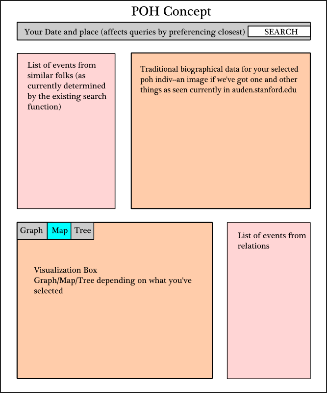
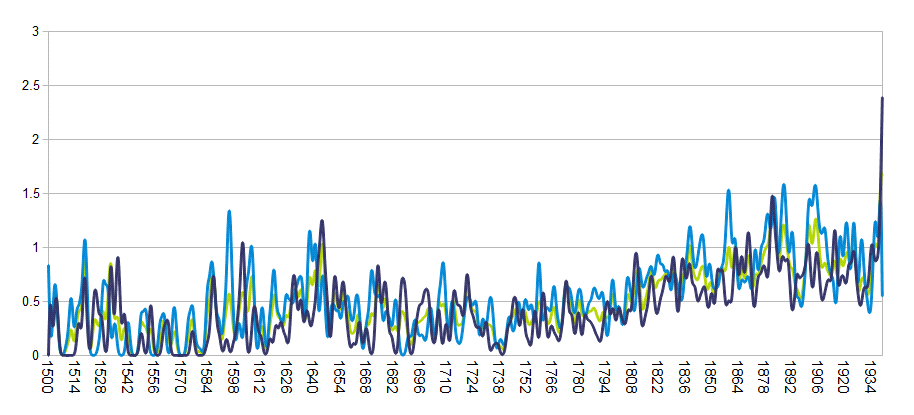
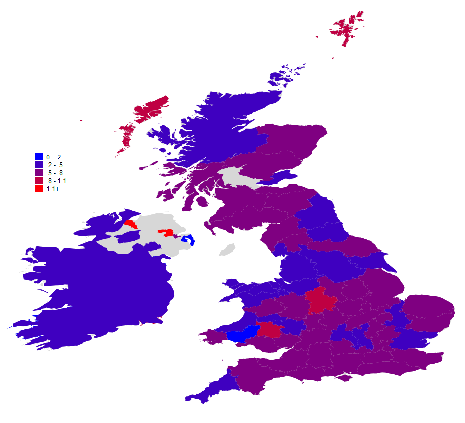
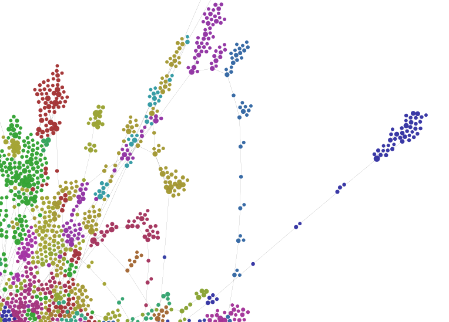
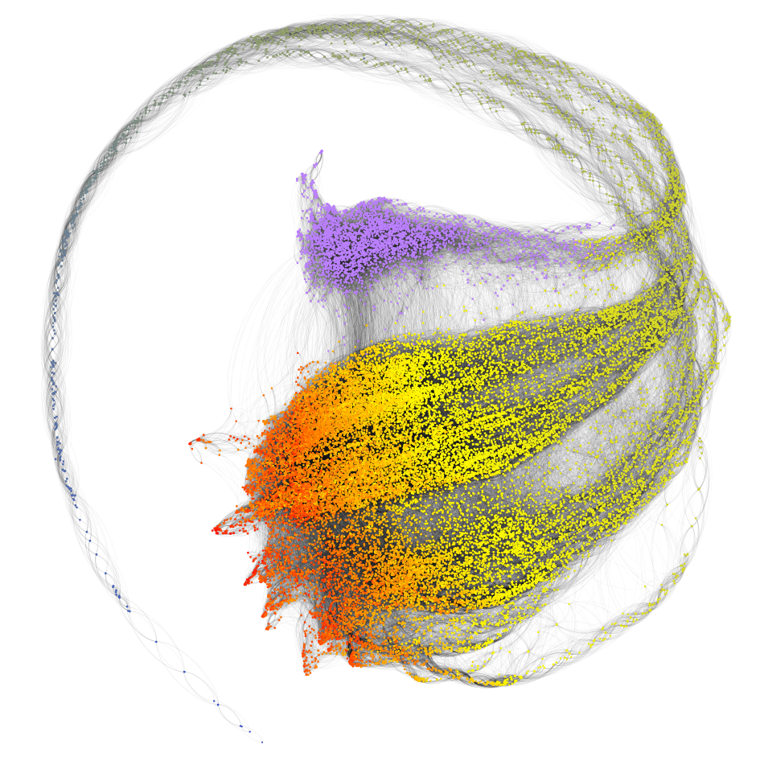
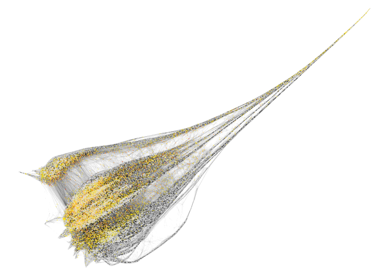

Terms of Use
The Kindred Britain website is subject to Stanford University's standard Terms of Use.
These terms include a limited personal, non-exclusive, non-transferable license to access and use the site for personal, non-commercial use only. Please contact Nicholas Jenkins to request permission to use the Kindred Britain website and contents beyond the scope of the above license, including but not limited to republication to a group or republishing the website or parts of the website.
The Kindred Britain site may include hyperlinks to websites maintained or controlled by others. Kindred Britain and Stanford University Libraries are not responsible for and do not routinely screen, approve, review or endorse the contents of or use of any of the products or services that may be offered at these websites.
Acknowledgments
Kindred Britain is about a large network of people. And another significantly-sized network of people contributed to Kindred Britain’s building.
The three individuals principally involved in the creation of Kindred Britain are Nicholas Jenkins (Stanford University), Elijah Meeks (Stanford University) and Scott Murray (University of San Francisco).
- Nicholas Jenkins originated, researched and oversaw the Kindred Britain project
- Elijah Meeks was lead developer on the Kindred Britain site
- Scott Murray designed the Kindred Britain site
In addition, through the collaborative process, Jenkins, Meeks and Murray all contributed ideas, feedback and conceptualizations to the areas for which another person had primary responsibility. You can read their reflections on different aspects of Kindred Britain.
In grateful recognition of the essential parts played by colleagues, students, friends and family, Nicholas Jenkins, Elijah Meeks and Scott Murray thank the following individuals and organizations for their work, support and advice:
Primary Support
- Academic Computing,
Stanford University Libraries - Digital Library Systems and Services,
Stanford University Libraries - Digital Initiatives Group,
Stanford University Libraries
Writers, Editors, Advisers
- Hannah Abalos (Stanford ’15)
- Emma Townley-Smith (Stanford ’16)
Researcher
- Anthony Andrews (independent scholar)
Research Developer
- Karl Grossner (Stanford)
Other Technical Support
- David Chon (Stanford)
- Matthew Jockers (University of Nebraska, Lincoln)
- Wilson Restrepo (Stanford ’13)
- Jon Robertson (Stanford)
- Shilpa Thanawala (independent designer)
Logistical, Administrative and Communications Support and Advice
- Alyce Boster (Stanford)
- Corrie Goldman (Stanford)
- Martha Langill (Stanford)
- Nelia Peralta (Stanford)
- Emily Saidel (Stanford)
- Brian Thomas (Stanford)
- Makoto Tsuchitani (Stanford)
- Glenn Worthey (Stanford)
Other Funding, Infrastructural and Resources Support
- Office of the President of Stanford University
- Stanford Arts Institute
- Office of the Dean of the School of Humanities and Sciences, Stanford University
- Undergraduate Advising and Research, Office of the Vice-Provost for Undergraduate Education, Stanford University
- Office of Development, Stanford University
Informational Support
- Oxford University Press and the staff of the Oxford Dictionary of National Biography
Indispensable Support of Many Other Kinds
- Eavan Boland (Stanford)
- Mimi Calter (Stanford)
- Zephyr Frank (Stanford)
- Stephen Hinton (Stanford)
- Richard Holeton (Stanford)
- Michael Keller (Stanford)
- David L. Kennedy (Stanford)
- Julie Lythcott-Haims (formerly, Stanford)
- Franco Moretti (Stanford)
- Alexander Nemerov (Stanford)
- Kathleen Quinn (Stanford)
- Aron Rodrigue (Stanford)
- Debra Satz (Stanford)
- Lauren Schoenthaler (Stanford)
- Matthew Tiews (Stanford)
- Robert Urstein (Stanford)
- Jennifer Widom (Stanford)
Familial Support
- Siri Huntoon
- Hugo Jenkins
- Owen Jenkins
- Hajra Meeks
Frequently Asked Questions
Overview
Navigation
How do I see how two people are related?
Kindred Britain allows you to see the shortest path connecting two individuals. There are several ways to see these connections:
- In any view in the Network panel, you can drag one node (representing an individual in Kindred Britain) onto the top of another node.
- If you want to connect two specific individuals, use the Connections tab located in the Search dropdown.
- Each individual has a set of Close Links in his or her Biography Box or Card. These represent a selection of well-known people to whom they are more or less closely related. Click on one of these names to see that familial connection in the Network panel.
- Use the Connect To function, located at the bottom of the Biography Box and Biography Card, to connect the subject of the Biography Box to anyone else in the Kindred Britain network.
How do I start over?
You have two options. Using the Recent Views tab (located in the Search menu), you can navigate to any of the last five visualizations you viewed. If you want to begin browsing the site from scratch again, click on the Kindred Britain masthead in the top left corner and select the Start button in the dropdown.
How do I see if a particular person is included in Kindred Britain?
To see whether an individual and members of his or her family have been included in Kindred Britain, use the Search function, located in the top right hand corner of the page. To search for a particular person, use the Individuals tab; to search for families, use the Groups tab. If results are returned, click on the relevant name.
How do I navigate between the Network, Timeline and Geography panels?
The three panels have been designed so that you can view all three at once, any two at once, or simply focus on one. To open and close the panels, click on the label names on the right hand side. According to whatever the current view is, their number will increase or decrease (though at least one panel will always remain open).
What can I do with the Network Panel?
You can do a number of things to interact with a Network visualization. Hovering over a single node will identify who the individual is. Clicking on a node will open a Biography Card with a summary of the person’s life. You can also click and drag a node to interact with another node. If two nodes are connected, you can hover over the connections to see how different individuals are related to each other. Lastly, if you click the gear symbol on the Network label, you can apply a number of transformations to the visualization.
See also the Network Panel section of the User's Guide.
How do I know which individuals are currently displayed on the Network Panel?
To find a list of the names of people currently displayed, click on the title of the visualization. This is located above the Network Panel, and below the Main Menus. For example, if you are on the Welcome screen, click on the box titled ‘Some Luminaries in Kindred Britain’.
Content
Why didn’t I get the search result I was looking for?
Let’s make a rough estimate of the number of people who have lived in the British Isles over the last 1,450 years. If we put that number at 100 million and juxtapose it with the number of people in the Kindred Britain database, which is roughly 30,000, we see that the ratio of inclusion is tiny. It is not surprising to see how many people are not included. But, given this selectivity, it is striking to see how very many significant figures from British history are included.
That said, numerous famous names that you might be interested in are not returned when you perform a search. It is not impossible that a familial connection exists between one or all of these figures and someone already in the database. However, none has so far been established, and hence they are not - or not yet - part of Kindred Britain.
This isn't a complete genealogical record - why are certain family members left out of Kindred Britain?
The site does not attempt a procedure of complete coverage. In most cases, it does not list all members of any particular family. Instead, the effort has been to trace connections between selected individuals, usually on the basis of general historical or cultural interest. Over time, more individuals and material may be added, and corrections will be made whenever possible. As that happens, the interconnections between different parts of the database will increase. This site is a growing thing.
Moreover, Kindred Britain grew through a process that involved as much sensibility as rigor. The various boughs of the tree grew from branch to emerging branch as the compiler’s interests prompted them. Kindred Britain claims no kind of exhaustiveness of treatment. The main aim has been to make suggestive or interesting connections. We are always interested to hear from users about information which has not so far been included, but please be aware of the principle of selectivity at work here: while Kindred Britain is sympathetic to the desire for this or that fact or individual to be included, we are under no obligation to enter any specific detail or person into this database.
If you’re interested in learning more about the creation of Kindred Britain, see Nicholas Jenkins’ essay ‘Originating Kindred Britain’.
Isn’t everyone related to everyone else?
Not in a meaningful sense. Although recent scholarship claims that any two modern Europeans can ‘share around 2-12 genetic common ancestors from the last 1,500 years’,1 the identities of these ancestors and the relationships between them are rarely known. Kindred Britain fills this void by demonstrating that - for a certain stratum of British society - these ancestral relationships are far more immediate and densely interwoven than suggested. And the completely visible nature of these relationships in Kindred Britain reintroduces narrative and the specificity of personhood into the midst of an abstract scientific discourse.
Further, contemporary science, like traditional genealogy, remains focused on ancestry. This occludes the vast terrain of social relationships mediated by the institution of marriage. Kindred Britain incorporates ancestry, but it also goes far beyond it by embracing as well the crucial dimensions of familial connection and relatedness through marriage and other similar relationships.
1 Ralph and Coop, ‘The Geography of Recent Genetic Ancestry across Europe’, PLoS Biol, 2013.
How were the Timeline’s historical events picked?
The Timeline’s historical events are intended to provide a broader context for the lives of individuals and families in Kindred Britain. Year-by-year coverage runs from 1200 to 2012; due to the depleted historical record, the period before 1200 is covered much less systematically. Although it is impossible to compress any single year’s events into a text shorter than a single Tweet, the compilers have attempted to strike a balance between:
- providing basic historical information about British and European history.
- attention to synchronous developments in cultures across the globe.
- occasional picturesque, suggestive or unusual details that symbolize the presence of daily life in its randomness within the rigid chronological march of history.
Have I seen some of this site’s research somewhere else?
Nicholas Jenkins used a site called [W. H. Auden - ‘Family Ghosts’] (http://auden.stanford.edu) to compile an earlier version of this database. Though unlinked to and unadvertised, that site was visited by a number of users: it is possible that you first saw some of the material now exclusively on Kindred Britain in a different format there. Kindred Britain supersedes and renders superfluous W. H. Auden - ‘Family Ghosts’.
Can I add my research to the Kindred Britain site?
No. Kindred Britain is a standalone site, reflecting the best efforts of its makers to provide an image of British culture inflected through the lens of family ties. A mass of websites already exists for researchers who would like to share the fruits of their own inquiries with others.
However, Kindred Britain is always happy to receive corrections: click here if you would like to inform us about what you believe is an error, providing as much detail as possible along with your source references. We also welcome suggestions for future inclusions relevant to the overall research agenda of our site. But we regret that Kindred Britain cannot undertake research on your behalf nor is it obligated to enter into correspondence with you about matters such as genealogy, scholarship, British history, website design or any other subject.
Development
Who researched this? Who coded this? Who designed this?
Nicholas Jenkins did the research presented on the site with help from Anthony Andrews and a number of other individuals who answered particular questions or provided specific information. You can read more about Jenkins’s work on the Kindred Britain project here. Elijah Meeks and Karl Grossner performed the software and database development on the site. You can read more about Meeks’s and Grossner’s contribution here. Scott Murray designed the site. You can read more about Murray’s contribution here.
Why was this site created? What is its purpose?
Inspired in part by Noel Annan’s epigram in his famous essay ‘The Intellectual Aristocracy’ that ‘Family connexions are part of the poetry of history’, this site was created to capitalize on contemporary developments in network theory and digital technology that have made it possible to show in new ways how intensely familial British culture and society have been. You can read more about the creation and purpose of the site in Nicholas Jenkins’s essay ‘Originating Kindred Britain’.
How did Kindred Britain come about?
In brief, Kindred Britain began as an individual research project conducted by a Stanford University English professor, Nicholas Jenkins, about family connections in British culture and history. You can read more about how Kindred Britain came into being in Jenkins’s essay ‘Originating Kindred Britain’.
In 2012, Jenkins had the chance to work with Stanford Libraries’ Digital Humanities Specialist Elijah Meeks on transforming the Kindred Britain database into a contemporary web-based format. You can read more about the coding and development of the site in Meeks’s and Karl Grossner’s essay ‘Developing Kindred Britain’.
Jenkins and Meeks approached the University of San Francisco designer and digital visualization specialist Scott Murray to join the project team. You can read more about the design of the site in Murray’s ‘Designing Kindred Britain’. The result is the site you are using.
Technical Issues
Why does my browser have trouble running Kindred Britain?
Kindred Britain takes advantage of advanced web technologies to display information using a variety of methods. This requires a browser that can display SVG (scalable vector graphics), and some browsers have better or worse performance displaying these graphics. Kindred Britain performs best in the Chrome browser, and should perform well in Safari and Opera. For reasons beyond Kindred Britain’s control, Firefox does not perform well with SVG graphics, and performance suffers as a result. With respect to Internet Explorer 9 and Internet Explorer 10 (beta), Kindred Britain simply does not work; if you are able to use another browser, we recommend you do so.
Some areas of the site aren’t visible on my laptop screen. What do I do?
If you are having trouble viewing Kindred Britain because of a small screen size, use the Control- or Command- key combination to zoom out, or click Zoom Out in the browser’s View menu. If this fails to help, click on the Kindred Britain masthead at the top left of the page and use the Start button to begin your exploration again.
Is there an app for Kindred Britain?
At this point, there is no Kindred Britain app.
Possible Errors and Further Questions
It says [X] was married five times, but I know it was only three. Is this a mistake?
Mistakes are always possible (indeed, in a work of this size they are inevitable) and, wherever and whenever feasible, Kindred Britain will correct them. If you believe you have found an error, or a bug, click here to report it.
Keep in mind that Kindred Britain uses experimental strategies and software in an attempt to produce some numerical summaries of a person’s life. One such technique is the ability to list the number of marriages an individual was part of. At Kindred Britain’s current state of evolution, we are not able to differentiate automatically between legally sanctioned marriages, long-term affairs or relationships, bigamous relationships and same-sex relationships. We hope, in the future, to refine our methods of articulating these connections. For now, Kindred Britain’s software errs in most cases on the side of inclusiveness in defining a number for the marriage badge.
I know that [X] was married and/or had children, but none of these relationships are listed. Why is that?
As noted above, the site does not attempt a procedure of complete coverage. In most cases, it does not list all members of any particular family, nor even any marriage for family members. Instead, the effort has been to trace connections between selected individuals, usually on the basis of general historical or cultural interest.
I want something added or removed from Kindred Britain. What do I do?
Every detail of this website has been compiled in good faith and with a belief in the accuracy of the information contained here. But we neither recommend making any practical decision of any sort based on what you read here, nor do we undertake to remove any factually accurate statements with which you happen to disagree or to add information which you desire to see included.
Why are there no sources, footnotes or references in Kindred Britain?
In common with many scholars of works about culture or history, the compiler of Kindred Britain made a conscious decision not to include references for the sake of retaining broad accessibility and legibility. This is a good faith effort made by an individual trained as a scholar. Mistakes have undoubtedly been made: in an exploratory effort of this kind, there can be no illusion of perfection. On the other hand, without exploration, there can be no possibility of extended knowledge or understanding.
I have a copyright concern. Whom should I contact?
Click here to send Kindred Britain details about your concern. Please be as specific as possible.
User's Guide
Contents
Overview
Kindred Britain is a network of nearly 30,000 people - mainly British, mainly dead - connected through family ties. But the site is not merely an extensive archival record. All sites, all datasets make arguments as well as presenting facts. Kindred Britain is a proposition about the profoundly and unusually familial nature of British society and culture.
If Kindred Britain were a book, it would be at least a foot wide and would weigh more than several bags of sugar. The material in it would be inert, static, and, because of its scope, virtually unassimilable. As it is, the data for Kindred Britain occupies a tiny, occluded space on one Stanford server. It glows on the wafer-thin silicon layer on your TFT-LCD display. And its contents are almost infinitely manipulable. Genealogy is one of the most ancient historical genres, and what was almost certainly the first self-conscious use of network understanding. Kindred Britain projects that old, conservative discipline into an absolutely modern medium to produce new understanding.
The effort embodied in Kindred Britain is multivalent. It is an intensive scholarly effort that also tries not to lose touch with the lightness, beauty and power of contemporary technology, nor to ignore that an intrinsic part of almost everyone’s online experience, high or low, is playful, popular, exploratory.
Kindred Britain is about relationships and connections. And, correspondingly, the three panel design (Network, Timeline, Geography) is constructed so that the site not only responds to the user but shows panels responding to what occurs in each other. In other words, the site is interactive both externally and internally.
One note: Kindred Britain is not intended to be a comprehensive biographical site. If you wish to find a narrative about an individual’s life, there are numerous online sources for you to draw, not least, in many cases, the Oxford Dictionary of National Biography (ODNB). Kindred Britain does not try to duplicate information available elsewhere. Instead, it offers something unavailable elsewhere.
Three Modes of Engagement:
Play, Explore, Mine
It is impossible to read through Kindred Britain sequentially from beginning to end. It is a site to move around in either purposely or serendipitously, to return to for information or pleasure, to contemplate whether as a network or as a kind of image.
As this implies, you can interact with Kindred Britain in numerous ways. Here are three of the most basic.
- You can play, by dragging and dropping nodes on the Welcome screen. The drag and drop method of connecting nodes, which you first encounter on the Welcome screen, works on any visualization in the Network panel.
- You can go a bit further and explore using some of the curated connections and stories available through the Main Menu dropdowns.
- You can mine the deep interiors of the site using the search box. There are nearly 30,000 people in the site. That means there are over 870 million different paths through the Kindred Britain network. Use it for your research. Use it to suggest research topics. Use it to learn. Find out more about figures or families you already know something about. Or, through connecting someone familiar to a disparate sphere or world, reframe and reimagine an individual whom you think you already understand. The possibilities are virtually endless.
Kindred Britain’s hope is that these modes, which are not exhaustive, are also not exclusive. Thus, the spirit of play has been designed to inhabit the realm of research on this site, and the realm of play accommodates, perhaps even facilitates, the spirit of research.
Getting Started
Unless you clicked on a permalink in a Tweet, on a Facebook ‘Like’ or in a friend’s email, your first encounter with Kindred Britain probably comes through the Welcome screen.
Think of the Welcome screen as the starting point for Kindred Britain. This page is designed to help you become familiar with some of the tools that Kindred Britain has to offer. If at any point you wish to return to this page, click on the Kindred Britain masthead at the top left and choose ‘Start’.
On the Welcome page, the Timeline and Geography panels are minimized by default. In the Network panel, which is maximized, there is a small selection of nodes representing ‘luminaries’ from the Kindred Britain network. (These are by no means the only ‘luminaries’ in the site: for example, some 4,431 individuals in Kindred Britain also have an entry in the Oxford Dictionary of National Biography. That amounts to around 8% of the total number of biographies in the entire reference work. In addition, there are eminent people still alive, at the time of writing, who therefore do not have an entry in the ODNB, as well as notable foreigners who are in the same position for a different reason.)
Hovering your cursor over a node identifies the individual represented by that node. Clicking on a node will cause a Biography Card to pop up with some information about the individual:
- Hover your cursor over the badges to see some statistical details of the individual’s life.
- Click on the picture (if there is one) to enlarge the individual’s portrait.
- Look at the ‘Close Links’ to other ‘luminaries’ in the network. If you like, click on a link to see the path connecting the two luminaries. Note: in this version of Kindred Britain, the path shown cannot be filtered or modified and will always be the shortest possible route between the two people involved.
- Get a brief description of the individual’s occupation.
For more on Biography Cards, see the section of that name below.
By dragging one node next to or on top of another, you can also explore Kindred Britain in two other ways:
- When the node’s blue penumbra turns orange, a comparison box will appear relating the two individuals in terms of historical time and differing lifespans. If there are any professional similarities, the box will also show these.
- When the node’s penumbra turns green, you can release your mouse button - doing so will prompt Kindred Britain to update the screen to show the familial path between the two individuals. From here, you can hover over any of the nodes and the lines between them to see how all the individuals on the screen relate to one another.
You can continue to explore some of what Kindred Britain has to offer by clicking, reading and perusing the rest of the site. Start your own search, or look at some of the curated material in the Main Menu dropdowns, or go back to the initial visualization on the Welcome screen to discover more connections. The world of Kindred Britain is at your fingertips.
‘Home’
Technically, Kindred Britain has no homepage. However, you can return to the Welcome Screen - which is similar to a homepage - at any point by clicking on the Kindred Britain masthead at the top left and clicking ‘Start’.
Site Architecture
Working with Panels
The overall architecture of the Kindred Britain site can be understood in terms of two sets of three. There are three independent but related panels - Network, Timeline, Geography - that provide three different views onto Kindred Britain’s data. The panels are where you see the results of your actions - and also where you can interact with the site through hovering your cursor, clicking and dragging. When you change the view in one panel or click on an element in another, the other two ‘kindred’ panels will respond to the action. (See each panel’s respective section for more information.)
You can view all three panels simultaneously, or any two, or just one. To open a minimized panel, click on its label name, located on the right; this will force any other open panels to share the available space. To close a panel, click on the label to minimize it. Note: the only time the panels will not respond to your mouse clicks is when you are looking at a single maximized panel and you try to minimize it. It is impossible for nothing to be showing on the screen. (See also Using Multiple Panels.)
Working with Dropdowns
The other main tripartite element is the set of clickable dropdowns: ‘Kindred Britain’ on the top left of the page, the Main Menus in the top center, and the Search, Sharing and Questions icons on the top right. These dropdowns allow you to look at different parts of the Kindred Britain database in a variety of ways. In essence, they are your primary method of exploring the site and issuing commands. You could compare them to three tunnel entrances all leading into the same mountain.
With the Main Menu dropdowns, you can simply click on the heading to reveal the dropdown. In many other areas of the site, you can open a panel or a box by clicking on the downward-facing arrow. To close a panel or a box, click on the upward-facing arrow. A right-facing arrow usually reveals more information or sends you to a new visualization or a new state of a box or dropdown menu, while a left-facing arrow closes the extra information or returns you to a previous state.
Tip: If you are accessing Kindred Britain on a smaller screen, it is possible you will not be able to see the up arrow that minimizes some dropdowns, panels and boxes. To remedy this situation, use the Control- or Command- key combination to zoom out, or click Zoom Out in the browser’s View menu. In the unlikely event that this fails to help, click on the Kindred Britain masthead at the top left of the page, select the ‘Start’ button and begin your exploration again.
Using the Network Panel
The Network Panel supports the crux of Kindred Britain’s argument. As Kindred Britain’s designer, Scott Murray, says, ‘Connections are the heart and soul of the site, as they represent what is unique about this historical data set’. You can take figures from highly disparate areas of British history and find family connections between them. The scientists connect to the artists and generals. The eminent Tudors connect to the eminent Victorians. The Network Panel allows you to learn about an almost infinite number of connections across time and through professional space. And it allows you to understand these connections visually rather than trying to absorb them verbally.
There are two types of visualizations. If you search for a single individual, the visualization will show his or her family tree. Otherwise, if you search for the connection between two individuals, the visualization will show the path of familial ties of marriage, lineage and siblinghood between the pair. The path shown cannot be filtered or modified, and will always be the shortest possible route between the two people involved.
Whether you are viewing a family, a dynasty, or a familial path between two individuals, you can:
- View biographical information by clicking on any single node.
- Compare two nodes by dragging them closer until the surrounding circle, or penumbra, turns orange.
- Connect two nodes by dragging them on top of one another so that the penumbra is green.
To find the names of all the individuals currently shown in the Network panel, click on the Title dropdown in the middle of the page underneath the Main Menus. Clicking on any of the names will cause the screen to update: the new individual’s Biography Box will appear, minimized, on the left side of the page, and their family tree will populate the Network panel.
Reading a Network Visualization
It’s easy to pull up a network visualization on Kindred Britain. And, with a little practice, reading that visualization is not hard either. Here are the ways that people can be connected to each other in Kindred Britain’s visualizations:
- A yellow line denotes lineage. For example, Elizabeth I is the daughter of Henry VIII and Anne Boleyn, so a yellow line is drawn between her and each of her parents.
- A magenta line denotes marriages, domestic partnerships and affairs. If two nodes are connected to each other by a magenta line, then the individuals are related through marriage (most commonly), a partnership of some kind or by an affair.
- An orange line denotes siblings. If two nodes are connected to each other by an orange line, then the individuals are siblings.
Because Kindred Britain is designed around the current standard monitor size of 1200 x 800, if you are using a smaller screen, it may be difficult to see all the ways that people are connected to each other. If this is the case, you can click and drag the different nodes to different parts of the canvas so that it is easier to read the visualization. To reset the tree, open the Network Gearbox and select one of the available layout options.
Note that, in contrast to the actions in the Timeline and Geography panels, you cannot scroll up or down to zoom in and out in the Network panel.
To learn more about using the Network panel with the Timeline and Geography panels, see Using Multiple Panels.
Gearbox Transformations
If you click on the Gearbox symbol located on the Network label to the right, you’ll see that there are two types of transformations you can apply to the currently displayed nodes. These are Layout transformations and Color transformations.
Layout
- The Tree layout creates a family tree for a family or a dynasty, and a grid for a connection between two individuals. This highlights the generations in a visualization. Note that this layout can only be used for networks in which all nodes are connected.
- The Plot layout plots the nodes on the canvas by Year of Birth and Year of Death. This gives you another way to view individuals on a chronological scale.
- The Force layout arranges the nodes according to a traditional force-directed algorithm. This means that nodes are attracted to the other nodes that they are connected to, and pushed away from nodes they are not connected to.
- The Professions layout turns on polygons (known as convex hulls) around nodes based on their occupations. This gives different approximations of social connectivity, to contrast with lineal connectivity. Note that the Professions layout is not available unless you are using a force-directed layout.
Color
- The Centrality function colors the nodes according to their centrality values, which is based on their level of connectedness in the network. See the conceptual story on Centrality for more information.
- The ODNB function colors the nodes by their ‘ODNB score’, which is the distance a particular node has from a relative mentioned in the Oxford Dictionary of National Biography.
- The Birthdate function colors the nodes by year of birth.
- The Tragedy function colors the nodes by their tragedy score. See the conceptual story on Tragedy for more information.
- The Inbreeding function colors the nodes by their relatedness score. This quantifies about how many generations you need to go back in the database to find a common ancestor between the individual’s parents.
- The Depth function colors the nodes based on the number of ancestors mentioned in Kindred Britain. For example, an individual with a score of 40 has a lineage that can be traced back 40 generations in the database.
- The Gender function colors the nodes by gender. Male nodes are blue and female nodes are purple.
When you click on the different color transformations, a legend appears at the bottom of the Gearbox panel. This gives you a sense of what values correspond to what color on the screen.
Tip: If you have more than one panel open, you may not be able to see the color legend. To fix this, use the Control- or Command- key combination to zoom out, or click Zoom Out in the browser’s View menu. You can also minimize the other panels such that you have only one panel maximized.
Note that to close the Gearbox panel, you must click on the gear symbol itself.
Using the Timeline Panel
The Timeline panel takes the individuals currently displayed in the Network panel and lays their lives out on a timeline. The default setting is to view the lifespan bars in a Traditional layout. Here, you can hover over a single lifespan bar to view whichever events from an individual’s life are recorded in Kindred Britain.
As Kindred Britain is not a site for biographies, the events included on each individual’s lifespan bar are selective, rather than comprehensive. If you wish to learn more detail about the life of a particular individual, there are numerous online sources for you to consult.
Reading the Timeline
Blue circles, located throughout an individual’s lifespan bar, represent births and deaths; purple circles represent other types of events that took place during the individual’s life. For some visualizations, you may see vertical bars connecting certain lifespan bars. Green-gray bars represent a birth, and connect the blue circles of individuals involved with that birth. Purple bars represent marriages or domestic partnerships between two individuals, and connect their corresponding event circles. Divorces, which are also represented with a purple bar (these are another kind of marriage event), are distinguished by connecting gray circles from two people.
As you browse the Timeline, historical events will appear at the bottom of the panel to provide some context to the lifespan bars. This is a curated selection of events, and is not intended to offer a definitive account of history. It is designed to offer some juxtapositions between an individual’s life and a broader historical frame. (That is why the text in the historical events chronology is shown at a right angle to the orientation of the timelines.) To turn these events on or off, click anywhere in the white background canvas of the Timeline panel.
If you would like to examine the Timeline panel in further detail - especially if you are viewing a visualization with people who lived in multiple centuries - scroll up and down to zoom in and out.
To learn more about using the Timeline panel with the Network and Geography panels, see Using Multiple Panels.
Gearbox Transformations
Clicking on the Timeline gearbox allows you to color the lifespan bars according to different measurements - centrality, birthdate, relatedness, ODNB, tragedy, and depth - each of which is defined in the previous section.
One type of transformation unique to the Timeline panel is the Event view. In contrast to the Traditional layout, the Event view reduces the lifespan of each person on the panel to a single identifying event. A simple algorithm ranks the events of each individual’s life and attempts to display the most important event. The rankings are as follows, in descending importance: a story event (related to a narrative discussed in one of the curated Kindred Britain stories), a life event (for example, an invention or a publication), an occupation, a marriage, or a birth. Clicking on such an event expands that single lifespan bar, allowing you to view that person’s life in isolation.
Note that to close the Gearbox panel, you must click on the gear symbol itself.
Using the Geography Panel
The Geography Panel provides you with a map of the world, with highlighted regions to denote the different places that the people of the current visualization are from. For example, if you open the Geography Panel while on the Welcome page, you can see that the selection of Kindred Britain’s featured ‘luminaries’ come, or came, from across Europe, Asia, and the United States.
Reading Geography
Hovering over a highlighted country or region allows you to see the people currently shown in the Network and Timeline panels who are associated with that place. In the current version of Kindred Britain, associations with a region are only included at the level of counties within Britain, states within the United States, and countries for the rest of the world.
If you would like to examine the Geography panel in more detail - a possibility especially likely in the case of England and its many counties - scroll up and down to zoom in and out.
To learn more about using the Geography panel with the Network and Timeline panels, see Using Multiple Panels.
Gearbox Transformations
Clicking on the Geography gearbox allows you to color the counties, states or countries of origin according to different measurements - centrality, birthdate, relatedness, ODNB, tragedy, and depth - each of which are defined in the Network Gearbox Transformations section.
One layout transformation unique to the Geography panel is the Cities layout. This function allows you to see the locations of some important cities across the world. Click on the button in the gearbox to toggle this function.
Note that to close the Gearbox panel, you must click on the gear symbol itself.
Using Multiple Panels
As described in the Working with Panels section, Kindred Britain allows you to compare the different types of visualizations next to each other. For example, having the Network and Geography panels open at the same time allows you to see where each individual in the visualization is from, if known. Or, if all three panels are open, when you click on a lifespan bar in the Timeline panel, the relevant node will be highlighted in the Network panel, and/or the counties and countries associated with that person will be highlighted in the Geography panel.
Opening and Closing Panels
To open or close the different panels, click on the labels ‘Network’, ‘Timeline’ or ‘Geography’. Note that you must click on the panel’s name on the label, not the panel’s gearbox. Clicking on a panel’s gearbox — which is located to the right of each panel’s name — allows you to perform transformations on the nodes. (See Network, Timeline and Geography.)
When a panel is visible, clicking on its label name on the right hand side of the page will minimize it. If a panel is minimized, clicking on the label name will enlarge it, forcing any other open panels to share the available space. If you want to look at only one panel, make sure the other two panels are minimized. Try minimizing and enlarging panels: the logic of the system is easy to learn.
Note: Kindred Britain, like nature, abhors a vacuum. The only time the panels will not respond to your mouse clicks is when you are looking at a single maximized panel and you try inadvertently to minimize it. It is impossible for nothing to be showing on the screen. At least one panel must be open while you are using the site.
Biography Boxes
If you search for an individual or the connection between two individuals, the left side of the page, and, if applicable, the right, will fill with a heading that gives the name, and birth and death dates for the individual or individuals you searched for. These headings are the minimized states of Kindred Britain’s Biography Boxes.
To open a Biography Box, click anywhere on the heading except for the individual’s name (this will direct you to the individual’s family tree) or picture (this expands the portrait). Once a Biography Box is opened, you can peruse a number of attributes, details and statistics, which has been presented in a condensed form akin to a character sheet in a role-playing video game (Experience, Abilities, Health, Items Possessed and so forth) - or, for the more traditionally inclined, akin to a player’s baseball card (Team, Biography, Number of Games, Runs and so forth).
Each Biography Box contains a number of features, depending on the level of information available and also relevance to an individual. The full range of features and their ordering is as follows:
- Name
- Dates of birth and death
- Portrait: If the individual has a portrait included in Kindred Britain, click on the picture to maximize and minimize it.
- Suffix: If the individual has a title (for example an earldom, a barony or a baronetcy), this will be shown here as will any post-nominal letters designating qualifications, positions, honours or memberships (for example, medals or memberships of the Royal Society or the Privy Council).
- Badges: Kindred Britain assigns, as applicable and according to what information is available in the site’s database, various coloured badges to individuals. From left to right, these are:
Married: Lists the number of marriages for this individual recorded in Kindred Britain. Not all marriages for every individual may be listed. The information given is circumscribed both by limits of available information and also by the selective nature of the database.
Note: Current limitations of Kindred Britain mean that sometimes socially recognized but not legally sanctioned relationships - such as ‘associations’ between male royalty and their mistresses - are described as ‘marriages’. Additionally, seeking to go beyond the hyper-traditionalism often implicit in genealogy, Kindred Britain selectively designates as ‘marriage’ some same-sex relationships.
Note that Kindred Britain is descriptive and not prescriptive. It does not claim to redefine ‘marriage’ as it has been understood throughout history. Rather, it tries to register some of the great variety of relationships which throughout history have together constituted the notions of kin and family. The designations made here are important but highly preliminary gestures towards better descriptions and understandings of what ‘family’ has meant in different historical contexts. Greater nuance in these areas is an important aspiration for subsequent versions of the Kindred Britain.
- Children Describes the number of children listed for this individual in the database. Not all children are listed, either because of limitations of the historical record or because of the selectivity of the database. Further details about the total number of children an individual had may be available in the Events section of the Biography Box.
- Professions: Awards a badge if the individual is known to have followed a particular profession. If the individual was active in more than one sphere or occupation, a number of badges are awarded.
- Tragedy Index: Attempts to signal the degree of ‘tragedy’ in the individual’s life. The algorithm for producing these values remains, to put it mildly, primitive. Nonetheless, to the creators of Kindred Britain, the effort to discern whether numbers can measure a subjective value such as ‘tragedy’ remains an important one and we invite users to reflect on this value in a speculative way. See ‘Computing Tragedy’ by Elijah Meeks for a lengthier discussion on the Tragedy Index.
- Generations of ancestors in Kindred Britain: Lists the number of generations between the individual and his or her most distant direct ancestor in the Kindred Britain database.
- Inbreeding: If an individual’s parents are related lineally, this score quantifies about how many generations you need to go back in the database to find the common ancestor.
- Oxford Dictionary of National Biography medallion: The Oxford Dictionary of National Biography (ODNB) is the standard biographical reference work for important figures in British history. Individuals who have an entry in the ODNB have a gold medallion in Kindred Britain. For those without, the medallion is blue, and the number in the centre indicates the number of steps or degrees this person is from someone who does have an entry. This medallion thus gives one rough indicator of social positioning.
- Centrality:Indicates the individual’s network centrality ranking, which is a technical measurement that does not necessarily correlate with historical significance. If the badge is orange, then that means the individual is in the Top [X] Most central (Top 10, Top 100, Top 1000, Top 10,000); if it is green, then he or she is in the Bottom [X] Least central (Bottom 10, Bottom 100, Bottom 1000, Bottom 10,000). If the badge displays an ‘M’, that means the individual occupies a position in the middle range and is neither particularly central nor particularly peripheral in network terms. This gives 9 categories of centrality, as represented in the Centrality Legend. See ‘Centrality and Notability in Genealogy’ by Elijah Meeks in the Stories section for a lengthier discussion on Centrality.
- Stories: If an individual is featured in, or relevant to, a story narrated in one of the site’s Stories, a link to that story will appear.
- Close Links: Shows the number of degrees of familial separation between the individual and five other figures of historic significance. Aside from showing connections between individuals who might not normally be linked together, Close Links also establish (as with the ODNB distance badge described above) a way of gauging relative social prominence.
This distance is measured in degrees of separation, with one degree being assigned for each step of distance. Thus a child is one degree or step from its parents as well as from its siblings or a wife is from a husband, just as a husband is two steps from his wife’s parents. Each degree of separation is represented by one diamond.
If you would like to connect this individual to any other person in the Kindred Britain database, you can use the ‘Connect To’ function at the bottom of the Biography Box.
- Events: Allows you to peruse whatever material exists in the database about the biographical and historical circumstances of an individual’s life. There are three filters: Personal, Similar and Global.
- The Personal setting, selected by default, shows selected events from an individual’s biography. The level of biographical coverage varies by individual and to some extent reflects the compiler’s sense of the ready availability (or lack) of information about an individual’s life. In cases where much precise information is readily available elsewhere, there is likely to be little on the Kindred Britain website. This setting can be switched off at any time.
- The Similar setting introduces events concerning contemporaries whom an algorithm suggests may be similar to the individual whose Biography Box you are reading. The measure of similarity is based on shared occupations, shared places, and similar numerical attributes derived from the system of badges described above. This setting is switched off by default, but can be switched on at any time.
- The Global setting introduces three historical events that provide context at three points of the individual’s life: the year of the birth, the middle of their lifespan, and the year of their death (if applicable). This setting is switched off by default, but can be switched on at any time.
- Connect To: The Close Links in the Biography Box give you an automatically generated set of historically significant figures to whom you can connect the individual. If you want to connect this individual to anyone else in the Kindred Britain database, use the Connect To search box at the bottom of the Biography Box. Once the terms of your search are established, the path between the individual you have been studying and your chosen second individual will propagate in the Network panel.
To close a Biography Box, click the up arrow at the foot of the Box.
Tip: If you are accessing Kindred Britain on a smaller screen, it is possible you will not be able to see the up arrow that minimizes the Biography Box. To fix this, use the Control- or Command- key combination to zoom out, or click Zoom Out in the browser’s View menu. In the unlikely event that this fails to help, click on the Kindred Britain masthead at the top left of the page and begin your exploration again.
Biography Cards
Biography cards appear when you click on a node in the Network visualization panel. These are essentially abbreviated versions of the Biography Boxes. Biography Cards feature Names, Dates of birth and (if applicable) death, Portraits (if included), Suffixes, Badges, Stories, Close Links, and a Connect To search, as well as a capsule descriptor (if available) of the person’s professional activities. You can always convert a Biography Card into a Biography Box by clicking on the individual’s name at the head of the card. See also the comments on Biography Cards in the Getting Started section of this Guide.
If you cannot see all the details in a Biography Box, you can drag the whole Network panel up until the details are raised into view. To shut a Biography Card, click the up arrow at the foot of the box.
Browsing Main Menus
In the top middle of the Kindred Britain page are three dropdown menus titled People, Connections and Stories. Each of these offers a way to browse some curated suggestions that will help broaden your understanding of the site, give you a sense of some of the possibilities to explore in Kindred Britain, as well as show you interesting and provocative historical vignettes.
People
The individuals in the People dropdown are a sampling of the thousands more you can explore for yourself in Kindred Britain. You can look at popular views, professional groups, famous families, well-known siblings, and individuals who formed some kind of historical landmark. You can create custom modified versions of these types of view, guided by your own interests, using the Groups tab in search.
Connections
Kindred Britain aspires to connects those normally unconnected to each other, such as those people divided by different fates. In the Connections dropdown, you can look at the familial ties underlying famous rivalries, judges and victims, poets and subjects, artists and sitters, doctors and patients, as well as those who lie next to one another in death. These juxtapositions illustrate just some of the connections between historical individuals that you can make on Kindred Britain.
Stories
Each of the Stories available through this dropdown menu is an in-depth curation of insights discovered using Kindred Britain. The Historical and Cultural stories focus on specific cases where using Kindred Britain has revealed something important or provocative — or just plain interesting — about a family or group of related people. The Conceptual stories explain some of the logic behind how the site is built — for example, how Kindred Britain computes an abstract quality such as ‘tragedy’, using life events.
A set of visualizations is pre-loaded for each Story. You can manipulate the visualizations as you can any visualizations with your mouse buttons and cursor or through using the various options in the Gearbox dropdown in any of the three panels.
If you decide to strike out on a novel path that your explorations suggests to you, rather than staying with the narrative line, you will navigate away from the story. If you subsequently decide you want to follow the story to its end, you can either re-select the story through the Stories dropdown or, if you had only recently been browsing through the narrative, you can return to it via Recent Views in the ‘Search’ dropdown on the top right of the Kindred Britain page.
Searching Kindred Britain
Search functions are signalled by the magnifying glass icon, which is the first of three icon on the top right hand side of the Kindred Britain page. There are four different ways you can perform searches in Kindred Britain: by Individuals, by Connections, by Groups, or by Recent Views.
To narrow your search, each of these search functions, except for Recent Views, uses a feature called a Birthdate Bar. By default, the Birthdate Bar is set to ‘Born anytime’. By dragging the left and right handles on the blue bar, you limit your search to individuals born within a particular time period. For example, searching for ‘Smith’ with the Birthdate Bar restricted to 1600-1700 will give you a much shorter list of results than searching for ‘Smith’, born anytime. To reset the Birthdate Bar to ‘Born anytime’, click on the white space of the blue bar.
In searches on the Individuals, Connections, and Groups tabs, the search function uses a basic weighting process - based on factors such as the individual’s historical significance and reputation - in an attempt to push individuals you are more likely to be searching for towards the top of your results. Because no possible matches are screened out, what the program deems to be less likely matches are ranked lower in the list of results.
Note: Search functionality is a complex issue, and the search functions in Kindred Britain are currently in an early stage of development. Searches in Kindred Britain are not case- or diacritical-sensitive. Additionally, this search finds results in the database with the name most similar to the query, and returns individuals associated with that query. For example, if you type in ‘Hampshire’, it will return anyone associated with the county Hampshire - not New Hampshire.
Individuals
Click on the Individuals tab in the Search dropdown. Type in the name of an individual into the text field to search for a person. Once the results have been retrieved, click on any of the names to go to a view of that person’s family, including all of their immediate relations who are included in the Kindred Britain database.
Tip: One way to search for individuals is to select a given period on the Birthdate Bar without typing any names into the text field. This gives you a list of all the individuals that are listed within a certain time period.
If you are unable to find a specific individual, this may be because of one of the following reasons:
- The database is selective, not exhaustive.
- The iron law for inclusion in Kindred Britain is that an individual have familial or marriage ties to someone already included.
- As this database was compiled by a single person, the individual was simply omitted because of whim, ignorance or choice.
Many historically significant individuals are not part of this network. However, it is part of the claim made by Kindred Britain that, rather than focus on the omissions, it is more important to focus on the fact that a surprisingly large number are included in this network. For the record, though, amongst those individuals not (or not yet) included are: the poets Elizabeth Barrett Browning and Robert Browning, the philosopher Thomas Hobbes, the computer scientist Alan Turing, the playwright Ben Jonson, the scientist Michael Faraday and the fantasy novelist J. R. R. Tolkien.
Connections
If you have two specific individuals that you would like to connect, you can use the Connections Search to do so. Click on the Connections tab in the Search dropdown. The same basic procedures pertain here as for Individuals: Enter the name of the first person you want to connect and choose from the results. When the search box reappears, type in the second name you wish to search for. Either a list of search results will appear, or the panel will inform you that no matches were found for your search. If the latter happens, you can go back and try again. If the former, then click on a name to select it. Immediately after you click on the second name, Kindred Britain will lay out the familial path connecting the two individuals.
Groups
One powerful way to browse through Kindred Britain is by searching in the Groups tab. There are three ways you can search in this tab: by Profession, by Family and by Place. Click on the Groups tab in the Search dropdown.
Profession
The multi-colored boxes at the top of the dropdown box represent the different professions, or occupation spheres, held by the people of Kindred Britain. The default state of the Groups search tab has all Profession boxes disabled, so the color boxes are washed out. Hover over any Profession box to reveal its associated subpanel of specific occupations. Moving the mouse off of the profession box and/or its corresponding subpanel dismisses the subpanel. No click is required to dismiss the subpanel.
Clicking on a Profession box will select it, and therefore all of the various occupations listed on the subpanel. All of the colored boxes in the relevant occupation sphere will then become saturated. Clicking the Profession box again will deselect it, and therefore also all of its occupations. To search for certain occupations within a Profession, select or deselect your desired queries in the subpanel.
Family
Type in the name of a family to retrieve all the people associated with that family.
Location
Type in the name of a Place to retrieve a list of people associated in the Kindred Britain database with that location. In the current version of Kindred Britain, Location searches are only possible at the level of counties within Britain, states within the United States, and countries for the rest of the world.
You can perform a search using any combination of these filters. For example, you could use the Profession boxes to select ‘Poet’ and the Place search box to select ‘Devon’. Or you could input ‘Eliot’ in the Family search box and ‘Massachusetts’ in the Place search box. Or you could select Poet in the Professions box, input ‘Eliot’ in the Family search box, and ‘Missouri’ in the Place search box - this allows you to see all the poets in the database with the last name of Eliot who are associated with Missouri.
Recent Views
The architecture of Kindred Britain does not allow you to use your browser’s back button to browse through your previous searches. However, the Recent Views tab in the Search dropdown keeps track of the last five visualizations that you have viewed. Click on any of the listed visualizations to return to a recent point in your exploration of the site.
If you want to return to an earlier point in your use of Kindred Britain, the best option is to begin a new search on the person or family or path that you are interested in reviewing again. Or, if you want to begin completely from scratch, click on the Kindred Britain masthead on the top left of the Kindred Britain page and select ‘Start’.
Sharing Kindred Britain
You can share any interesting visualization you find on Kindred Britain in two ways: by the social media dropdown - via Twitter, Facebook, or Google+ - and/or by cutting and pasting the permalink from the Kindred Britain address bar into an email. However, for technical reasons note that some curated lists — such as the ‘Professions’ and the ‘Sisters’ lists in the People dropdown — cannot be shared with a permalink, and can only be accessed from the Main Menu. Explanations of how one may navigate to these curated lists are best made in words.
If you would like to cite Kindred Britain in a scholarly publication, there are a number of valid possibilities for doing so. Customs and norms are evolving in this area and we offer some provisional suggestions here. However, users with a preference for a particular scholarly citation style will probably want to adapt what follows to their own protocols.
If you are looking at a specific visualization on the site, we suggest you use the title of the visualization shown in the title area in the top center of the Kindred Britain page, together with the site name, the permalink associated with the visualization and the date accessed. For example:
‘The family of Ludwig Wittgenstein’, Kindred Britain, http://kindred.stanford.edu/#/kin/full/none/none/I28692// . Accessed 24 June 2013.
Some text on the site is available only in dropdown form with no permalink available, as is the case with the site description found under the Kindred Britain masthead under ‘Learn More’. We suggest citing such material in the following way:
Nicholas Jenkins, ‘Encountering Kindred Britain’ [masthead dropdown], Kindred Britain, http://kindred.stanford.edu. Accessed 24 June 2013.
Stories, on the other hand, can be cited with a title, part number, permalink, and accession date, thus:
Elijah Meeks, ‘Centrality and Notability in Genealogy, Kindred Britain, part 2, http://kindred.stanford.edu/#/story/third/third/third///centrality. Accessed 24 June 2013.
Material from anywhere on the ‘Notes on Kindred Britain’ sub-site, whether signed by an author or not, can be cited in similar ways. For example:
Scott Murray, ‘Designing Kindred Britain’,Notes on Kindred Britain, Kindred Britain, http://kindred.stanford.edu/notes.html?section=designing. Accessed 24 June 2013.
Or:
‘Frequently Asked Questions’, Notes on Kindred Britain, Kindred Britain, http://kindred.stanford.edu/notes.html?section=faq. Accessed 24 June 2013.
Notes on Kindred Britain
The About dropdown on the far top right of the Kindred Britain page is likely where you found the link to this User's Guide. The other material available in ‘Notes on Kindred Britain’ is a set of Essays by the three creators of the site, as well as a section of Statistics giving some numerical values and summations about the site. Also included are this User's Guide, a FAQs section, a Glossary and an Acknowledgements section. All this material can be printed out if the user desires. You can return to the main Kindred Britain site at any time by clicking on the button in the top right-hand corner of the screen.
Further Help
Kindred Britain is a complex site, and we have done our best to make this guide comprehensive. However, as has been stated elsewhere: ‘Omissions are inevitable.’ If you have looked through this User's Guide and have not found the help that you need, you can also consult the Frequently Asked Questions or the Glossary.
Glossary
GENERAL
Badges: Small, colored squares or circles in a person’s Biography Box or Card. Hovering over a badge with your cursor displays text explaining what the badge represents.
Biography Box: A summary of key points of an individual’s life. Appears as a heading anchored to the side of the screen when you view the individual’s family, or their connection to another person. Consists of a series of badges, a list of the individual’s close and famous relatives in the database, a one-line description of what the individual is best known for, and a list of Personal, Similar and Global events.
Biography Card: A brief summary of an individual’s life. Appears when you click on the individual’s node in a Network view. Provides a series of badges, a list of the individual’s close and famous relatives in the database, and a one-line description of the individual’s activities (if available).
Birthday Bar: Located at the bottom of each type of search - Individuals, Connections and Groups. Allows you to drag either side of the bar to select the range of birthdates that you would like to consider when searching for an individual. Set to ‘Born Anytime’ by default.
Close Links: Found in a Biography Box or Biography Card. A ‘Close Link’ is another notable person in Kindred Britain to whom the subject of the Box/Card is relatively closely related. Hover over the name of the Close Link to see how many degrees of familial separation exist between the subject and the Close Link.
Degrees: Used in determining Close Links. One degree represents one step of familial relationship. For example, a woman is one degree away from her mother or a brother, two degrees away from a grandparent and so on.
Diamond: Used in determining Close Links. One diamond indicates one degree of relationship distance between the subject of the Box/Card and the Close Link. More diamonds denote more degrees of distance between two people.
Drag and Drop: Interaction with computer where user places cursor over an onscreen object, clicks mouse button to ‘grab’ the underlying object, ‘drags’ the object across the screen by moving the cursor with the mouse button depressed and when the object reaches the desired location on the screen releases the mouse button to ‘drop’ the object in its new place.
Dropdown: Clicking on various buttons in Kindred Britain opens different menus of options. These menus are called dropdowns. For example, clicking on the title text in the top center of the screen (on the Welcome screen, ‘Some Luminaries in Kindred Britain’) will open a dropdown with a list of the individuals present in the current view.
Edge: Technical term in network theory for a line that connects two nodes. In Kindred Britain, edges represent relationships between nodes (people), such as those of ancestry, siblinghood and marriage.
Gearbox: Located on the top right corner of each panel, next to the panel’s name. Click on the gear icon to open a menu of options for modifying the color and layout for each panel.
Main Menus: The three menus located at the top center of the screen: People, Connections and Stories. People and Connections are a set of curated collections designed to give you a sense of some of the possibilities you can explore in Kindred Britain. The Stories menu guides a user towards interesting and provocative historical vignettes.
Masthead: Located in the top left corner of the site. Clicking on the Kindred Britain masthead will open a small menu with a brief description of the site. From here, ‘Start’ will take you to the site’s Welcome screen. ‘Learn More’ will guide you to a longer description of the site.
Node: A colored circle in the Network Panel, and a technical term in network theory for any object connected to other objects. In Kindred Britain, nodes represent people. Male nodes are blue, and female nodes are purple.
ONDB: Oxford Dictionary of National Biography - standard, multi-author reference work on the lives of important figures in British history. First volume published in 1885. It amounts (at the time of writing) to 58,664 biographies in 60 volumes in the print edition. The ODNB is also available online.
Panel: The Kindred Britain screen is divided into three horizontal sections. Each section is called a panel. The titles of the panels are available in the top right corner of each: Network, Timeline, and Geography. Panels can be active or minimized.
Profession Box: Located in the Groups tab of the Search function. Each Profession box represents a type of profession - for example, Politics or Law. Hovering over a Profession box brings up a subpanel, on which conceptually similar occupations within this profession are listed. These occupations can be selected or deselected to refine the terms for a search in Kindred Britain by profession.
Sub-site: Found by clicking the ‘?’ dropdown at the top right. This part of Kindred Britain, titled ‘Notes on Kindred Britain’, opens in a new browser tab. It contains general essays and statistics about the site, as well as various help resources including this Glossary.
Timeline Panel
Birth Bars: A type of shared event. Denoted by a green-gray vertical bar connecting blue circles. Connects all the people who are involved within a birth. Can be a mother-father-child combination, or just a parent-child combination.
Current Year Bar: Follows the cursor and shows what year the cursor is currently on. Also gives user a historical event to contextualize an individual’s life. This feature can be toggled on and off by clicking on the background to the Timeline.
Divorce Bars: A type of shared event. Denoted by a purple vertical bar connecting gray circles.
Event Nodes: Denoted by circles of various colors on a single person’s lifespan bar. Each of these nodes represents a notable event within that person’s life. Events represented are selective and not comprehensive.
Event View: Reduces the lifespan bar of each person on the timeline to a single identifying event. Clicking on an identifying event expands the lifespan bar of that individual.
Historical Events: Oriented perpendicularly to the lifespan bars on the Timeline Panel. These represent a selection of one or two events per year that give historical context to the lives of the individuals on display. Click on the background of the Timeline Panel to turn the historical events on and off.
Lifespan Bar: Horizontal bar that displays how long a person’s life is on a conventional timeline.
Marriage Bars: A type of shared event. Denoted by a purple vertical bar connecting purple circles. Connects two people in marriage.
Shared Event: An event that involves more than one individual. In Kindred Britain, this will be a vertical Marriage Bar, Birth Bar or Divorce Bar.
Traditional View: Displays the different lifespan bars in a conventional format.
Gearbox Transformations
Birthdate: Colors the nodes by Year of Birth.
Centrality: Colors the nodes according to their level of connectedness in the network. The most central individuals in the network are the most well-connected, which implies a certain level of influence or importance within the network. The overall network Centrality is calculated from a variety of different measures, including whether the individual is in the densest or most-traveled part of the network. For more information, see ‘Centrality and Nobility in Genealogy’.
Depth: Colors the nodes based on the number of ancestors discoverable in Kindred Britain. If we know 40 generations of ancestors for an individual, that individual will have a rating of 40, whereas if we can only go as far back as a grandparent, that individual will have a rating of 2.
Force: Lays the nodes out according to a traditional force-directed algorithm. Nodes are attracted to those nodes to which they are most closely related (those to which they have most connections or from which they have fewest degrees of separation). Nodes are pushed away from those nodes to which they are least related (those to which they have fewest connections or from which they have the largest degrees of separation).
Inbreeding: Colors the nodes by their Relatedness score, which is the number of generations you need to go back in the database to find a common ancestor between the individual’s parents.
ODNB: Colors the nodes by their ODNB score. This score is the distance from a relative mentioned in the Oxford Dictionary of National Biography.
PlotPlot: Lays out the nodes on the canvas by Year of Birth and Year of Death. This gives you another way to view individuals on a chronological scale.
Professions: Turns on polygons around nodes based on their occupations. This gives some approximation of their social connectivity to contrast with familial (or lineal) connectivity.
Tragedy: Colors the nodes by their Tragedy Index score.
Tree: Creates a grid layout for a connection path, and a family tree for a family or dynasty. This highlights the generations of a family or path.
Biography Box, Biography Card
Centrality Badge: The network centrality ranking of the individual. If it’s orange, then that means the individual is in the Top [X] Most central (Top 10, Top 100, Top 1000, Top 10,000). If it’s green, then he or she is in the Bottom [X] Least central (Bottom 10, Bottom 100, Bottom 1000, Bottom 10,000). If it’s an ‘M’, then the individual is neither particularly central nor particularly peripheral. This gives 9 categories of centrality, as represented in the Centrality Legend.
Close Links: Some of the closest well-known historical figures. Their distance from the individual is represented by the number of diamonds.
Global Events: Lists three events that provide historical context to the individual’s life: one from the year of the person’s birth, one from the exact midpoint in their life and one from their year of death.
Inbreeding Badge: The ancestral distance between an individual’s parents, if they are related in the database.
Occupation: Indicates the occupations the individual had.
Personal Events: Lists (selectively) notable events that occurred during the person’s life.
Similar Events: Using an algorithm, experimentally lists events from other individuals in the database who are similar to the individual in the current biography panel.
Stories: Lists any stories on Kindred Britain where this individual is mentioned.
Tragedy Badge: A total of events in a person’s life defined as tragic and derived from the database: 1 point for dying young or to violence, 1 point for each child that dies before the age of 13, 1 point for each sibling that dies before the age of 13, 1 point for each parent that died during childhood, 1 point for each spouse that’s outlived by more than 20 years, and 1 point for mental illness. See the conceptual story on Tragedy.
Originating Kindred Britain
- E. M. Forster
Origins
In the beginning were the murders. Kindred Britain, a digital humanities project about the family in British history, was born in the distant aftermath of a set of domestic murders and a suicide. First came the deeds. Then, much later, came the words and the connections.
In early 1908, my great-great grandfather, Frederick Holmes, was a businessman living with his family in the hamlet of Fawley in Buckinghamshire, by the gentle meanderings of the River Thames. It was Wind in the Willows country. A brewer, Frederick had made and lost a great deal of money and, by the middle of the first decade of the 20th century, he had also become ill with a series of grim but unspecified ailments. His eyes were failing, he kept losing his balance, he had ‘gastric pains’. The family kept up appearances but their world was under pressure. He still tramped the fields with friends, shooting at creatures. But he had been forced to sell his last horse. Then, one night in February 1908, Frederick got up in the darkness of his bedroom, loaded his Webley revolver and shot my great-great grandmother Florence where she slept. He then moved down the corridor and shot their sleeping daughter Winifred. Afterwards, he climbed to the attic and murdered the young servants Lizzie Hayes and Ethel Morris. Frederick returned to his bedroom and, next to his wife’s corpse, reloaded his revolver before moving downstairs and out into the English countryside. A white, winter sun must have been coming up, there must have been heavy dew on the ground, birds must have been singing. He wandered around for several hours in who knows what agony of spirit before taking the gentleman’s (or the madman’s) way out and turning the gun on himself. A newspaper reported that Frederick’s body was found later ‘lying face downwards among the long grass and weeds. Blood was on the grass, near at hand was the weapon, and a brief examination showed that he had shot himself through the heart.’
Over time, that corpse became the skeleton in the family closet: never mentioned, let alone discussed. It was a loud silence, like the moment after a bang, in the background to everything. But, by accident, in 2007 I found out about the deeds that this enigmatic, deeply disturbed relative had carried out. It was hard to know how to react, how to feel: the story seemed about something far off and yet very close. Perplexed, I tried to piece the facts together in a blog entry called ‘The Events at Henley’. But I could offer no explanation and, even though the inquest was reported in the Times, some of the basic details were hard to establish. I thought it would end there: let the dead bury their dead. Not long afterwards, though, I received an email from Anthony Andrews. A retired British army officer, Anthony specialized in genealogical research, a subject I then knew nothing about, but which I have since learned constitutes one of the largest communities of investigators on the Internet. Genealogical sites on the Internet such as Ancestry.com are now so large that they advertise for customers on old-style media like television.
Anthony generously offered to help me find out more about my family background. We puttered around a little bit, dug up the names of a few vicars and spinsters, and were on the point of wishing each other farewell. But Anthony seemed to be lingering, as if he was waiting for something. I am a poetry critic and had for years been involved with the study of the 20th century poet, W. H. Auden. Not knowing quite what else to say, I asked Anthony if he could also just tell me a bit about Auden’s family history, a subject I knew had been little researched. The results were interesting. Auden’s father, although a solidly prosperous Edwardian doctor and public health official, came from a relatively modest background of Staffordshire farmers about whom very little is easily known. By contrast, Auden’s mother, Constance Bicknell, was extremely self-conscious and voluble, not to say snobbish, on the subject of her family’s noble roots. She even claimed to be a direct descendent of John of Gaunt. Anthony and I soon discovered that, incredibly enough, Mrs. Auden was almost right: a lineal ancestor was Thomas of Woodstock, John of Gaunt’s brother.
It was odd to realize that in Auden’s poem ‘O Love the interest itself in thoughtless heaven’, when he quoted part of John of Gaunt’s famous ‘this scepter’d isle’ speech from Shakespeare’s Richard II, he was citing a distant relative. But, over time, this came to seem less odd than eerily predictable. With Anthony’s help, the more I connected Constance Bicknell genealogically to an array of famous ancestors, the more I saw that many of these people could also be connected to one another without the mediation of Constance Bicknell. I began to grasp dimly the existence of a vast network of connections. And the more people I linked into this genealogical network, the more I saw that many other luminaries and well-known figures in British history could be fused into the structure I was uncovering. The idea reminded me of watching a magician who keeps pulling more and more knotted handkerchiefs out of his mouth till the fabric seems to be flowing on and on like an impossible, endless river of silk.
The more individuals and families I connected the more seemed to offer themselves for connection. But I was connecting people without, so to speak, putting two and two together. As is often the case with research projects in their initial stages, I had no real idea what I was doing. I was just doing it. It was not even my field: this was a historical project being undertaken by a non-historian. Regardless, a database was accreting. Eventually I would come to call it Kindred Britain. In the end, I put nearly 30,000 people from more than 12 centuries into this huge family web, observing the iron law of inclusion that in order for an individual to enter the network that person must have a familial tie — that is, a tie of lineage, siblinghood or marriage — to someone who was already a node in the network. The coral reef grew only when polyps attached themselves to the existing structure.
Initially, my mind linked the onset of the Kindred Britain project with the fortunate coincidence of my getting to know Anthony Andrews by email and being inducted by him at long distance into the world of genealogical research. (In time, Anthony and I exchanged many thousands of emails, though we never met.) But, as I now realize, I only got to know Anthony a result of something that was deeper and prior. The true point of origination for Kindred Britain was my learning about those murders in Fawley in 1908. In the foundations of the project, at least in my mind, are those bodies in the bedrooms, that man lying in the grass next to his revolver. And the case Kindred Britain makes about the inbreeding and familial interconnectedness of so much of what counts for British history and culture? That too has something to do with misalliances, with bodies, with silences, with blood.
Family Records
Family — it is an inescapable, core subject, a context for being in the world that everyone can relate to through understanding and through memory. For better and for worse, family life has become a bedrock component of modern experience. From Goya’s The Family of Charles IV and Picasso’s The Family of Saltimbanques to Dickens’s Our Mutual Friend and Tolstoy's Anna Karenina, family has been a primary source of subject matter for works of art and literature. The theme is so primal and pervasive that it has functioned as a well of metaphors for spheres of intellectual inquiry as different as institutional life and protein groups. Countless millions have lived largely without friends. Almost no-one has ever lived without some kind of family structure, even if, in some cases, that ‘family’ was more a pragmatic or ad-hoc assemblage than a legally-sanctioned entity.
What ‘family’ has meant varies widely across time and cultures, for example connoting at different moments a set of household servants, a military staff, a group of people living under one roof and (its most familiar contemporary sense) a bounded social-biological unit of parents and children. The ubiquity of the experience of being a family member has produced huge varieties of response to the familial matrix. Integral parts of the narrative of modern culture have been precisely about breaking away from family or about demystifying its function. In a famous passage near the start of The Communist Manifesto, Marx and Engels claimed that ‘The bourgeoisie has torn away from the family its sentimental veil, and has reduced the family relation to a mere money relation.’ But their word ‘relation’ seems to sustain the metaphoric hold of familyness even as the myth of the family itself, the authors assert, has been destroyed. Such is the eerie resilience of ‘family’ in the imagination that the term ‘relation’, which Marx and Engels intend to use simply in the sense of a social positioning or connection between people, retains the more specific, familiar meaning of a blood or marriage tie: ‘All fixed, fast-frozen relations, with their train of ancient and venerable prejudices and opinions, are swept away, all new-formed ones become antiquated before they can ossify.’ Some social theorists believe that we are on the brink of a post-familial era, but, as a practical matter, family relations persist: not unchanged but unvanishing. The family is fundamentally a conservative institution in human culture and part of what it conserves is itself. As a human grouping it remains astonishingly durable. ‘I hate the Family,’ George Bernard Shaw said in a lecture in 1886. ‘I loathe the Family. I entirely detest and abominate the Family as the quintessence of Tyranny, Sentimentality, Inefficiency, Hypocrisy, and Humbug’ (‘Socialism and the Family’). Shaw married in 1898 and in later years he retrenched in his hostility: ‘If you cannot get rid of the family skeleton, you may as well make it dance.’ Kindred Britain is neither for nor against the family in a moralistic sense: it is built on a simple, documentary belief in the centrality of family experience to the formation of British culture.
Most European cultures have been obsessed with noble families. (The excitement over the birth of the baby third in line to the throne has shown this is as true today in Britain as it was in the past.) The Almanach de Gotha, detailing the upper echelons of Europe’s courts and dynasties, was an annual publication between 1785 and 1944. New editions of Burke’s Peerage appeared at rapid intervals between 1826 and 1940 (and less frequently afterwards). These heavy, double-columned, black-lettered tomes were surely among the thickest books ever printed as well as, of course, being imbued with patriarchal ideology in its purest and most transparent form. Such volumes focused primarily on tracing dynastic lines stretching back into remote history rather than on including much about lines of relation extending laterally across time (as Kindred Britain does). Ancestors were more important than in-laws. But the familial obsession was not exclusively an aristocratic affair. Landed gentry and even the bourgeoisie emulated the self-aggrandizing record keeping of society’s highest echelons.
Unlike some popular genealogical websites, Kindred Britain does not aim to replicate Burke’s Peerage, but to do something different. This site covers a much wider social spectrum, there is no privileging here of ancestral lines over family connections made through marriage, it tries to treat sons and daughters as even-handedly as possible and where feasible it expands what can count as family beyond traditional legal definitions. (I will return to the last topic in the final section of this essay.) What can be achieved, though, is subject to a number of significant constraints. There is a vast discrepancy in what can be known about the lives, and even the identities, of people from different social classes in history. Much of the past has simply fallen from view, leaving gaps and holes, like those on a crumbled fresco. This basic characteristic of the historical record is one of the main factors structuring the uneven and irregular nature of the Kindred Britain database. Most of humanity through most of history has not just died but has also evanesced without trace. That problematic unevenness of visibility, created by class privileges, is compounded by the culture’s gradually accelerating compulsion to record and archive, often for the purpose of governmental control. So the historical record, extremely sparse for earlier periods, slowly gets thicker, more extensive and more particularized over time. This is a second factor in the fluctuating levels of detail in the database. These are both limits imposed by historical circumstances; the researcher has to acquiesce in the unavoidable constraints imposed by reality.
But the other main factors shaping the nature of the Kindred Britain database, about which specialist historians will doubtless complain, are the results of decisions about focus and scope. If all historical records of family are inevitably imperfect, I hope Kindred Britain turns that intrinsic incompleteness into an advantage. Kindred Britain is selective by design. Perhaps the site acts a little like a thermal camera. Such tools, designed to detect infrared waves, generate an image of the world similar to but different from the usual images of reality produced by cameras that detect visible light. The heat-sensitive camera tells a distinctive kind of truth, recognizable, even revelatory, but initially strange. It reveals what is hidden from the conventional lens. An object looks red or brown and has lettering on it in a conventional photograph. It shows a book. There is no way to tell whether the book has been lying in the midday sun or not. In an image of the book generated with a thermal camera, all we can know about the same object is its general shape and, vividly, its temperature. Neither image is true or untrue; neither cancels out the validity of the other. Like any conceptual focus, the picture in the lens of Kindred Britain foregrounds, clarifies and occludes.
Kindred Britain’s version of infrared is the wavelength of family relationships. It isolates and emphasizes family relations to produce a distinctive, bounded image of a lost world, an image in which a society normally segregated by class or money or technology or ideology or expertise or geographic locality is bound together by family ties. To stand alongside other images of Britain, the truth that Kindred Britain prioritizes is this world’s intensely familial nature.
Lastly, my interest has been in establishing as comprehensive and detailed a picture as I could manage, not in presenting the granular details of one or two families through time, which is the traditional genealogical mode. Rather, the effort has been primarily to trace connections between a large number of figures of general cultural, historical or scientific significance. If ‘distant reading’ of novels is one popular mode encouraged by the evolving field of digital humanities, then Kindred Britain can be understood as an effort in ‘distant mapping’. I was trying to map at the scale of the county, perhaps even the nation, not at the scale of the parish. Or, to put it another way, it was not the individual pixels that mattered to me so much as the totality of the image captured.
For that reason, I did not focus on recording every last unmarried parson brother or dutifully meek, married sister from every family I took note of. Instead I actively curated my database, powered by the conviction that compiling something exhaustive (and exhausting) is not the same as creating something illuminating. Adapting a method more like the mode of the novel than the social science, statistic-heavy textbook, I foregrounded what I, as a scholar, sensed was interesting, revelatory or necessary. In doing so, I found happening in Kindred Britain what occurs to some of the minor characters in a panoramic novel like Middlemarch. Some family members took up disproportionate amounts of space. Others were thrown into the shadows or edged to the blurry margins, as inessential to construction of the ‘plot’. And the plot, in Kindred Britain’s case, was to make wide-ranging connections across what George Eliot, the author of Middlemarch, called ‘the great web’ of society.
Projects, like people, are creatures of their own time. Thinking in terms of links is, obviously, a contemporary preoccupation. In the age of Facebook and LinkedIn, connections, networks and webs are concepts that have become numinous to us. Indeed, in a very direct sense, Kindred Britain can be described as a social network. Facebook’s aim is to ‘make the [contemporary] world more open and connected’. Kindred Britain tries to make a small corner of the historical world more visible and connected. One of the mottoes of this site is E. M. Forster's equivocal but still subtly ambitious epigraph to Howards End: ‘Only connect…’. The product of a particular moment, Kindred Britain is about connections, family connections. And that focus determined everything.
Panoramas
Kindred Britain creates a family network embracing Jane Austen, Shakespeare, Nelson and Thomas More, along with a gallery of pirates, bankers, diarists, sculptors, photographers, secretaries and engineers. Every prime minister between Robert Walpole and Herbert Asquith is present. (And thus all of Britain’s prime ministers for this period are shown, possibly for the first time, to be connected by family ties.) Kindred Britain links the mad king George III and Henry Paget, the dare-devil aristocrat who lost a leg to grapeshot in the king’s service at Waterloo. It links antagonists such as Thomas More and Henry VIII or Oliver Cromwell and Charles I. It shows a family relation between the painters Van Dyck and Lucian Freud, separated by centuries but united through an obscure family connection as well as by their commitment to art. It unites the poets John Donne and Mina Loy, the literary dissidents John Milton and George Bernard Shaw, the novelists Jane Austen and George Eliot and the scientists Isaac Newton and J. C. Maxwell. The actor Kevin Bacon, famous not only for his talent but also for becoming the focus of the concept of a person standing at a ‘few degrees of separation’ from various well-known figures (or they to him), is here shown to be at various degrees of familial separation from around 30,000 other people, including the politician George Washington, Napoleon, the actress Olivia de Havilland and King Alfred the Great. On Kindred Britain you can see the degrees of family separation between Kevin Bacon and the great Renaissance author Francis Bacon. And of course everyone mentioned in this paragraph is connected by a family relationship to all the other historical figures mentioned in this essay.
It would be wrong to consider these familial ‘paths’ between the illustrious or the famous as being simply about two marquee names. A path, as the term implies in the more familiar ambulatory context, is not just about a beginning and an end. The path gains its character from what lies between those points as much as from the starting and finishing points (or nodes) themselves. The route is not so much from A to B as from A to Z and therefore including all the letters in between. One significant interest of Kindred Britain’s path-finding function lies, then, as much in the unexceptional but often quirky or tragic interstitial figures that the paths throw into temporary prominence. They are like the faces in the crowd of one of the giant panoramic paintings by the Victorian artist W. P. Frith.
For example, my own favourites among these faces in the crowd, momentarily spotlit, include Frances Teresa Stuart, ‘la belle Stuart’, who in the 1660s served as the model for Jan Roettier's figure Britannia, the ultimate icon of Empire, and Sir Charles Isham, the man who is thought to have introduced gnomes into English gardens in the 19th century. The site is a panorama of life (or lives), full of pathos and not a simple catalogue of triumphs and achievements alone but also of dwindling hopes, lurches of fortune and mismatched ambitions. Indeed, you could think of it as a type of Trollope-like, multi-generational novel in the form of a database. The achievements of one generation are engulfed in the tragedies of another. There are, for instance, the sad endings of the descendants of Victorian ‘luminaries’ such as Darwin, Dickens and Tennyson. One of Charles Darwin’s grandsons, Erasmus Darwin, was killed in Belgium in 1915. Cedric Dickens, grandson of Charles Dickens, died at the Somme in 1916. And two of Tennyson’s grandsons died in the same conflict: Harold Tennyson, drowned when his ship HMS Viking struck a mine in the English Channel in 1916 and Aubrey Tennyson, killed in action in France in 1918.
And Kindred Britain also shows you now utterly forgotten figures who somehow seem to acquire significance from the very fact of their being brought back for a moment out of the deepest shadows. There is the 11 year-old boy, Hon. Henry Parker, who in a Parisian hotel in 1817 choked to death on a single grain of rye in front of his horrified parents. And then there are the victims of nature or humanity: Dorothea de St. Michel who died of the plague in London on Christmas Eve, 1664; William Godwin, the son of the philosopher William Godwin, who died of cholera in London in 1832; the landowner Thomas Thynne, murdered in 1682 by assassins dispatched by a rival; Rev. John Coleridge Patteson (a distant relative of the poet Coleridge), murdered by Solomon Islanders in 1871; Anne Meinertzhagen who died in 1928 when a gun her husband was holding ‘accidentally’ triggered. These poignant ‘minor characters’ in the book of life are part of what give human colour to Kindred Britain’s network.
It is important to understand that Kindred Britain is not a biographical site. For the most part, there is relatively little detail on the events and achievements of the people included here. This is not because such things do not matter but because, in the case of well-known figures, these details are widely and easily available elsewhere. Kindred Britain tries to do something different: not to isolate and exalt the eminent, but instead to embed and situate them within a network of relations. Context is all. That is why, when you search for an individual, you will find that individual and their family. When you find Jane Austen, you will see her in the setting of the admirals and clerics who were her brothers and you will probably notice that the women in Austen’s family were outnumbered by the men. Some might argue that these circumstances are what made the subject matter of her novels and that it is right read her art in terms of her family life. Kindred Britain does not take sides. But it suggests that another possibility is to read her life and her family’s predicaments and milieux in terms of her art. Similarly, Kindred Britain allows you to contemplate the family of Charles Darwin and his siblings with the links in their recent family history to the worlds of the arts, poetry and commerce. And you can ponder such connections in relation to the deeply trope-bound nature of Darwin’s scientific texts, where metaphors such as ‘the Tree of Life’ and the ‘Family of Man’ are of crucial importance. What can one make of this? Kindred Britain is here to prompt questions.
It is hard to contemplate the image of the world crystallized by Kindred Britain without noticing the vastly greater sense of continuity of family life in the past. Following a particular family through multiple generations, as the site allows you to do, shows that — to a degree which will seem extraordinary to most contemporary sensibilities — families persisted in their places of living, as if they were locked to the soil. You see that there were very limited options for careers for men, and that marriage or spinsterhood were the only choices (if they were choices) for women. And you recognize that most people of the people in this network would have expected to be buried near or next to their parents, grandparents and remoter ancestors.
There is of course social mobility visible in Kindred Britain, but it feels much more the exception than the rule. Among the exceptions are families that transcended disaster. In the mid-18th century Edmund Sheehy was an Irishman sentenced to be hanged, drawn and quartered for his part in a murder and for being a member of the Whiteboys gang. In spite of the social ignominy and personal squalor of his death in an obscure corner of Ireland, among his grand-daughters were Ellen Power, who became the wife of Viscount Canterbury, speaker of the House of Commons (and son of another Archbishop of Canterbury) and Margaret Power, Countess of Blessington, novelist and lover of the fashionable dandy, le comte d'Orsay.
Analogously, there are instances of modest or ‘obscure’ origins transformed into social splendour. Richard Payne Knight, aesthete, theorist of picturesque, and author of a risqué book on the worship of Priapus, was the grandson of the tough-minded industrialist Richard Knight. Payne Knight inherited a massive fortune from the Knight dynasty of iron masters and, using industrial money to pursue his interest in the chivalric mode, built the Gothic revival pile of Downton Castle in Herefordshire on a mediaevalist model. Or, to take another example from the database, the granddaughter of Joseph Severn, the motley painter who was the poet John Keats’s last companion as he lay dying in despair in Rome, married F. E. Smith, Lord Chancellor of England.
But such dramatic changes of family fortune or social position seem relatively rare. Freud wrote that ‘Anatomy is destiny.’ It is only slightly less absolute to say that for most of history, perhaps even today, ‘Family is destiny.’ For many people, family life was confiningly dynastic. Even for those younger sons in the upper and upper-middle classes, the possibilities of change and choice were minuscule. George Orwell remembered that ‘Small boys used to count the plum stones on their plates and foretell their destiny by chanting, “Army, Navy, Church, Medicine, Law”’ (The Road to Wigan Pier).
The business and artistic (and occasionally scientific) dynasties on view in Kindred Britain were one consequence of this rigid world. Families trained their children to follow in the steps of the parents, marshalling expertise and precious resources and often keeping trade secrets to themselves. For many children, there was a closed circle of expectation and desire. Those ancient signs were quite common still in the Britain I grew up in, where the names of businesses often included the designations ‘Bros’ (for ‘brothers’) and ‘& Sons’. Examples of these family dynasties in Kindred Britain include the Brunel family of engineers, the Mushet family of minters and miners, the Kemble/Siddons family of actors, the Lupino family of dancers, vaudevillians and actors, the Burney family of musicians and the great Wedgwood family of ceramicists. In addition there were numerous dynasties of bankers such as the Barings. There was the Stevenson family of several generations of lighthouse builders (seven members of whom were members of both the Institution of Civil Engineers and fellows of the Royal Society of Edinburgh), from whom the writer and poet Robert Louis Stevenson, like a distinguished fluke, sprang:
In the afternoon of time
A strenuous family dusted from its hands
The sand of granite, and beholding far
Along the sounding coast its pyramids
And tall memorials catch the dying sun,
Smiled well content.
The Darwins and Huxleys through multiple generations have been involved with science. There are dynasties of philanthropists, such as the Quaker family of the Tukes, for example, running from William Tuke, 18th century founder of The Retreat, a Quaker asylum in York run on the lines of ‘moral treatment’, through to his great grandsons James Hack Tuke and Daniel Hack Tuke. There were military dynasties, grandiose sometimes, but also often relatively humble, like that of the Bellairs brothers: Henry Bellairs, who took part in the Battle of Trafalgar under Nelson, and William Bellairs fought at Waterloo under Wellington. And politics, of course, has also been a family business in Britain through the centuries, as this site shows. (Click on ‘Prime Ministers’ in the ‘People’ dropdown to explore how closely related the country’s leading politicians have been to each other.)
Occupation and family, like family and place, have been deeply bound together in the historical world represented by Kindred Britain. If you browse through the site, you will come across many other instances in which the army, the navy, the church and medicine claimed one or more sons from every generation. There were the generations of clockmakers, pamphleteers, singers, shipbuilders and painters. And always, always there were the lawyers.
There are intellectual dynasties too. Perhaps the most famous essay on British family history is Noel Annan’s essay ‘The Intellectual Aristocracy’, first published in 1955 in a Festschrift for the historian G. M. Trevelyan. In the piece, Annan argued that British intellectual life of the last two centuries was characterized by an evangelical fervor and moral earnestness that he traced to the abolitionist movement. And in the point that made his meditations particularly influential, Annan asserted that there was an extraordinarily dense network of family interconnection, created by ‘persistent endogamy’, between influential figures in British culture. Annan’s essay mentions some 816 individuals, connecting them as part of the network that forms his ‘intellectual aristocracy’ — 813 of these figures from Annan Kindred Britain identifies and integrates.
In spite of much well-earned criticism, ‘The Intellectual Aristocracy’ has enjoyed remarkable currency amongst social historians for well over half-a-century now: it is probably the single most frequently cited or alluded to historical essay written in the last 100 years. The main reason for the success of the essay lies in the simplicity of the idea at the essay’s heart. Annan’s essay hits powerfully on a core truth, a truth that is also at the center of Kindred Britain: whether actually or metaphorically, family connections in politics, in art, in the military, in science and in business have played a profoundly, and perhaps uniquely, influential role in the shaping of British culture.
Small Worlds
The varieties of people that I described in the last section of this essay demonstrate that one of the outcomes of the research and format of Kindred Britain is a proliferation of local narratives and local details. At the time of writing, there are records for roughly 29,937 people in the Kindred Britain database. (There are 14,980 males and 14,957 females.) That means there are some 897 million different paths around the Kindred Britain network. This constitutes, in practical terms, an almost infinite number of stories and connections. But the multitude of angles of approach that a user can take to the site’s material is balanced by a central idea underlying and animating the entire work: the formative power of family ties in the development of British culture.
To think of families as tying people together into a social network is not to take a perspective that comes from outside historical, literary or artistic perspectives. Perhaps the only word that resonates through the Jane Austen corpus with quite the same force as ‘daughter’ is ‘connection.’ Connection can mean many things in Austen but it usually relates to family relationships and to the ties between families. In fact, Austen’s work often closely aligns ‘daughter’ and ‘connection’. For example, in Pride and Prejudice, at the Netherfield ball early in the novel, Mrs. Bennet gloats to Lady Lucas over her expectation that her oldest daughter will marry the eligible Mr. Bingley. Jane Bennet overhears her mother and is appalled by the older woman’s crudity and pragmatism.
It was an animating subject, and Mrs. Bennet seemed incapable of fatigue while enumerating the advantages of the match. His being such a charming young man, and so rich, and living but three miles from them, were the first points of self-gratulation; and then it was such a comfort to think how fond the two sisters were of Jane, and to be certain that they must desire the connection as much as she could do. It was, moreover, such a promising thing for her younger daughters, as Jane's marrying so greatly must throw them in the way of other rich men. (ch. 18)
Mrs. Bennet thinks of the marriage as forming a ‘connection’ that she hopes will, as happens in any network when a new linkage is made by an edge joining two formerly separate nodes, alter the network. She conceives of society as a network: the advantages of following her cue are considerable because from there it is only another step to the contemporary science of networks.
The topic of the profound interconnectedness of humanity in the modern world had been broached by Hungarian author Frigyes Karinthy in his story ‘Chains’ in 1929. Researchers Manfred Kochen and Ithiel de Sola Pool worked on a theory of ‘small worlds’ at MIT in the 1950s. But it was Harvard social psychologist Stanley Milgram who first popularized the term in his essay ‘The Small World Problem’, published in Psychology Today in May 1967. Milgram reported on an experiment that asked a randomly selected group of people in Omaha, Nebraska to find a way to forward packages to a stockbroker living in Massachusetts. The ‘starters’ were only allowed to forward their packages to someone they knew on a first-name basis but whom they suspected might know someone who knew the ‘target’ for the package. The second recipients of the package were given the same set of instructions, as were the third and so on. Milgram announced that the median number of acquaintances needed to form a chain that could deliver the package from a person in Nebraska to one individual in Massachusetts was roughly five. There were thus six ‘steps’, or hops, from ‘starter’ to ‘target’.
Doubts have been cast on Milgram’s methods and on the validity of his results, and scholarly interest in his experiment seemed to remain relatively stagnant until D. J. Watts and S. H. Strogatz’s ‘Collective Dynamics of “Small-World” Networks’ in Nature in 1998. This discussion appeared at a point where the sociological impetus behind Milgram’s work intersected with the emerging field of network theory. In the meantime, though, the concept of ‘small worlds’ and the correlative idea of ‘six degrees of separation’ between any two people on earth had permeated widely through popular culture, not least as a result of John Guare’s popular play of 1990, Six Degrees of Separation. Since the turn of the century, scholarly and mainstream interest in ideas about networks has increased rapidly. For example, new and far more sophisticated online versions of the Milgram experiment have been made recently, often coming up with results that seem uncannily close to Milgram’s own. Thus, in 2011 Facebook researchers calculated that the average distance between any two people anywhere on the social network was 4.74 steps or hops (for two people within the same country the gap reduced to 4). In 2012, capitalizing on the popularity of the ‘Six Degrees of Kevin Bacon’ game, Google built into its search function the capacity to find a ‘Bacon number’ for any actor, based on the degrees of separation between Kevin Bacon and the actor stipulated. A more cerebral, but essentially similar, version of the ‘Bacon number’ is the ‘Erdős number’ earned by mathematicians on the basis of their ‘collaborative distance’ from co-authorship of a paper with the Hungarian mathematician Paul Erdős (1913—1996). But this is not merely an academic parlour game. Recently, a senior figure in the National Security Agency has commented that the NSA searches the data it collects for signs pointing terrorist collusion using a ‘two to three hops’ measure to probe for connections between suspects.1
Typically ‘small world’ networks, as understood by network theorists, exhibit both a high degree of clustering between nodes, creating dense regions of interconnection, and also an unusually short average path length between nodes. The instances of ‘small worlds’ experiments and metrics just described, though diverse, have strikingly in common an allowable extreme weakness (almost a contentlessness) in the ties that count as a ‘connection’. In Milgram’s experiment, an ‘acquaintance’ known on a first-name basis could range from a best friend someone had known for decades to the much-avoided parent of a child at one’s child’s school. A ‘friend’ on Facebook does not imply any personal relationship of any kind between the ‘friends’: if my own experience is anything to go by, many Facebook ‘friends’ are almost by definition people that the user has never met. A contact on LinkedIn is often someone who comes out of the ether.
Similarly, Sir Laurence Olivier’s ‘Bacon number’ (both Olivier and Bacon are in Kindred Britain) is 2 because Oliver appeared with Diane Lane in the forgettable A Little Romance (1979) and, more than two decades later, Lane appeared with Bacon in the forgettable My Dog Skip (2000).2 As a matter of interest, if we were to deploy the term a ‘KB2 number’, standing for a ‘Kevin Bacon-Kindred Britain number’, Olivier’s score would be 21 because there are 20 familial intermediaries between him and Bacon. One final example of the tenuousness of the ‘connections’ that are often used to form small world networks: it seems (in the nature of these things, it is hard to be certain) that for the NSA the creation of a person’s potential two hop ‘connection’ to a terrorist might an action as simple as unknowingly visiting the website once of someone who once visited a terrorist-linked website.
The dramatic quality of many ‘small world’ social networks, both forensic and ludic, often seems to rely on the strategy of stretching the meaning of ‘connection’ to a point of almost total elasticity. And yet the desire to keep producing new versions of these networks points to a deep contemporary compulsion to envision the world as interconnected.
Little Britain
Kindred Britain is a social network. But Kindred Britain’s ‘small world’ social network differs in two substantive ways from experiments such as Milgram’s or from the Facebook study or one’s professional network on LinkedIn. In the first place, it is striking that most ‘small world’ models are used to understand the present. (Google's ‘Bacon number’ algorithm is only a partial exception to this observation since it computes only relations to Bacon amongst other actors in movies. You will search in vain for a ‘Bacon number’ for great actresses and actors from the past such as Sarah Siddons or Edmund Kean.) Kindred Britain differs in being a social network largely of the past and, unlike most work on ‘small worlds’, it asks how we can use contemporary theories to understand differently, not the present, but history.
The second way in which Kindred Britain differs from these popular forays into network analysis is that the extraordinarily vague and malleable ways of connecting people in most social networks, as ‘acquaintances’ or ‘friends’, are rejected here in favour of something more clearly defined and restricted: family ties of blood or marriage. The iron law for inclusion in Kindred Britain is that an individual must have familial or marriage ties to someone already included. With a few important exceptions, which are discussed in the final section of this essay, any weaker ties than these are excluded by the logic of the system. The ‘small world’ nature of the Kindred Britain network is still starkly visibly. But it is plausibly, and not melodramatically, small: many of the paths of connection between two individuals shown in Kindred Britain are complex and mediated. People in the past might have been able to intuit some form of family connection that they could not trace clearly or define explicitly. It takes the power of modern computing to make these familial ties visible.
One further example of contemporary interest in the idea of a web of social connectedness needs to be mentioned. Thanks to immense recent progress on understanding the human genome, the widespread interest in constructing quasi-universal networks has recently exfoliated to include studies of genetic history. For example, new scholarship in population genomics has claimed that a ‘pair of modern Europeans living in neighboring populations share around 2-12 genetic common ancestors from the last 1,500 years’.3 In most cases, though, those ‘common ancestors’ are not personally identifiable as individuals and the chains of particular people linking a contemporary European to those ancient ancestors are entirely notional. Here again, Kindred Britain stands at an angle to contemporary scholarship. For those included in its database, Kindred Britain individualizes and particularizes the abstract and impersonal relationship between what scientists identify only with reference to genomic segments’. Kindred Britain reintroduces narrative and personhood into the scientific discourse. It also makes such distant relationships knowable and meaningful because, using the power of contemporary path-making software, it makes them visible. You can see the human links to the past here, not just understand them conceptually. Furthermore, Kindred Britain demonstrates that, in the case of a certain stratum of British society, the ancestral relationships are far more immediate, more pervasive and more densely interwoven than the general, average number of distant ‘common ancestors’ that a study such as Ralph’s and Coop’s posits.
Consider one further point. Contemporary genetic science, like traditional genealogy, remains focussed on ancestry. It therefore has little or nothing to say about the whole vast terrain of social relationships mediated by the institution of marriage. Perhaps I share 2-12 genetic common ancestors from 1,500 years ago with the woman I sit next to as I write this. But I am related to her in a far more immediate way: she is my wife and I am her husband. Kindred Britain incorporates ancestry, but it also goes far beyond it by embracing as well the crucial dimensions of familial connection and relatedness through marriage. One other way to put it would be to say that genomics and genealogy both work predominantly, if not exclusively, along the diachronic axis. Kindred Britain works along, and combines, the diachronic with the synchronic. That is part of what is new here.
It is hard to find many estimates of the number of people who have lived in Britain over the last 1,600 years, the period covered, however unevenly, by Kindred Britain. In 1900 the population of the United Kingdom was about 38 million. In 2011, the census estimated there were roughly 63 million inhabitants. At a most conservative estimate, then, we can assume that over the last 1,600 years about 120 million people have lived in Britain. (The figure obviously becomes greater if we consider the inhabitants in Britain’s empire during this period.) Kindred Britain includes roughly 30,000 individuals, perhaps 500 or so of whom are foreigners who married into British families. Or, to put it another way, Kindred Britain contains roughly 0.025% of the total population of Britain for the last 1,600 years. The Oxford Dictionary of National Biography (ODNB), a standard biographical reference work, contains, at the time of writing, 58,664 individual entries for ‘people who shaped the history of the British Isles and beyond’ dating back to an even earlier period than that covered by this site. Kindred Britain contains approximately 4,431, or about 7.5% of the individuals also included in the ODNB. That is to say, from a population sample of 0.025% it accounts for 7.5% who have ‘shaped the history’ of the country. The asymmetry between these two figures does suggest that British culture and history have been dominated in a sustained fashion by a relatively tiny slice, connected by family associations, of the total population of Britain through time.
However, just as the path between two individuals in Kindred Britain is about more than the path’s endpoints but also about the intermediary people that lie along this path, so it is important, when thinking about who is included in Kindred Britain, to recognize who is not included. Around the small city of names recorded in this database stretches a vast, dark wilderness of unrecorded and, in some sense, excluded lives. This database represents one man’s effort sustained over a few years to comprehend and share something about the British family and its relation to culture. If more researchers spent longer, the size of the database could doubtless be increased enormously. Some of the people ‘missing’ at present, such as the poets Elizabeth Barrett Browning and Robert Browning, the philosopher Thomas Hobbes, the computer scientist Alan Turing, the playwright Ben Jonson, the scientist Michael Faraday and the fantasy novelist J. R. R. Tolkien, would find their ways into Kindred Britain. But the more important truth is that most people who have lived in Britain could probably never be included in Kindred Britain. This website emphasizes connections, but the right, balanced way to read these connections is with an awareness not only of the people who are linked but also of the nameless throng of the unintegrated millions as well. From one point of view, or in one mood, it is hard not to think of the ‘people who shaped the history of the British Isles and beyond’ as being so suffocatingly narrow and exclusive a familial group as to make that history seem largely tragic. In that sense, then, Kindred Britain is not only a contribution to ‘small world’ studies because it is constituted out of a network with a high degree of clustering and a relatively short average path length, given the spans or geography and chronology traversed. It is also a ‘small world’ because it shows, for better and worse, how parochial the basis for a national culture can be. This might seem a retrograde and regrettable analysis. But what if, in addition to being retrograde and regrettable, it also turned out to be true?
There is another sense in which Kindred Britain is a ‘small world’ network. This sense has less to do with network science or demographics than with iconography. The family or clan has always occupied a highly symbolic role in most cultures. Conservative and radical thinkers alike have often drawn analogies between the organization of the family and the organization of the state. Edmund Burke claimed that familial and local affections were the basis of all attachments to wider affiliations, such as that binding citizens to the national community: ‘To be attached to the subdivision, to love the little platoon we belong to in society, is the first principle (the germ, as it were) of public affections’ (Reflections on the Revolution in France). And Alexis de Tocqueville argued that for European countries the family, especially in the person of the father, was the very image of the state:
Among aristocratic nations social institutions recognize, in truth, no one in the family but the father; children are received by society at his hands; society governs him, he governs them. Thus the parent not only has a natural right but acquires a political right to command them; he is the author and the support of his family, but he is also its constituted ruler…. In aristocracies, then, the father is not only the civil head of the family, but the organ of its traditions, the expounder of its customs, the arbiter of its manners. He is listened to with deference, he is addressed with respect, and the love that is felt for him is always tempered with fear. (Democracy in America, vol. 2, bk. 3)
The family is symbol of the country: this is a myth that the British monarchy has played on successfully for several centuries: the ‘modern’ royal family has placed an image of contented and self-contained family life at the centre of its claims to national representativeness and legitimacy. To talk about the British family is, then, to talk about the symbolism of the nation. And the specially closed and tightly-contained nature of family links, and particularly the links in the modern ‘nuclear family’, intersect with another of the crucial discourses about national identity. (OED’s first citation of the term ‘nuclear family’ comes from a 1924 article by the anthropologist Bronisław Malinowski.) Britain’s self-image as an ‘island’ nation dates back to at least the mid-18th century and became increasingly pervasive during the 19th century and the first half of the 20th century, when Churchill’s use of ‘the island’ as a trope for Britain provided one rhetorical culmination to the tradition. It is as if the island-consciousness encoded at the national level finds itself reflected in the metaphoric islands of separateness and inviolability that characterize immediate, local phenomena in Britain.
Everywhere you go in the country you can see enclaves and havens of separateness: gardens, allotments, clubs, pubs, phone boxes, garages, hedged fields, worlds behind walls. English poetry, with its sustained absorption in traditional poetic forms, can seem similarly obsessed with a vision of beneficent boundaries and borders. Examine book jackets from the early part of the 20th century and you are struck by the number of tidy, ruled boxes and textual containers that publishers used in their designs. This deep investment in boundedness mirrors the governing trope for English society: the island. The island is a bounded, self-enclosed space, set off from the rest of the world by what John of Gaunt in Shakespeare’s Richard II sees as a defensive wall of water:
This earth of majesty, this seat of Mars,
This other Eden, demi-paradise,
This fortress built by Nature for herself
Against infection and the hand of war,
This happy breed of men, this little world,
This precious stone set in the silver sea,
Which serves it in the office of a wall,
Or as a moat defensive to a house,
Against the envy of less happier lands,
This blessed plot, this earth, this realm,
this England.
(As you might expect, John of Gaunt, Shakespeare, Richard II and Churchill are all included in Kindred Britain: they can all be connected by family ties.) The ‘little world… house… blessed plot’: all the metaphors that heighten the sense of the intrinsically set apart, the self-complete, the privileged and insulated are figures of speech that can be directed towards an ideal image of the family as well. The family is a type of social island, and, as such, it can seem to symbolize the country itself. The ‘little world’ of England is deeply congruent with the ‘small world’ of family connections that has ‘shaped the history of the British Isles’. On that island, the metaphor of the family, and the reality behind the metaphor, provided a segment of the island's inhabitants with an even deeper sense of exclusivity and interrelationship. Kindred Britain is not just about British families, then. Because the family, as opposed to the individual, holds such symbolic weight within the culture, Kindred Britain is at the same time an investigation of family and an investigation of Britishness.
Scholarly Aesthetics
Genealogy is one of the most ancient and conservative forms of scholarship, complete with its own paraphernalia of experts and highly stylized rules. It is interesting to note, however, that, along with cartography, genealogy with its intricate schematizations of relationships of descent is ultimately responsible for the birth of the modern science of network representation. Network analysis is typically held to start with Leonhard Euler’s work in the 1730s on the problem of the ‘Seven bridges of Königsberg’. But in truth network representation begins much earlier, with the intricacies of genealogical trees and pedigree rolls and complex decisions about inheritance and birthright.
If Kindred Britain were a book, it would be at least a foot wide and would weigh more than several bags of sugar. The material in it would be inert, static, and, because of its scope, virtually unassimilable. As it is, the data for Kindred Britain occupies a tiny, occluded space on one Stanford server. It glows on the wafer-thin silicon layer on your TFT-LCD display. And its contents are non-linear and almost infinitely manipulable. Genealogy is one of the most ancient historical genres, and what was almost certainly the first self-conscious use of network understanding. Fully aware of the paradox, Kindred Britain projects that old, conservative discipline into an absolutely modern medium to produce new understanding. One or two mouse clicks, a few dragging actions, a strategically hovering cursor, a name, or a word tapped into a search box, can unleash formidable amounts of computing power dedicated to generating disruptive knowledge and provocative ideas.
As such, Kindred Britain clearly belongs in the emerging field of the digital humanities. One very simple way of establishing its location is to reflect on the fact that the project is not an archival one, concerned primarily with storage of material. Instead, Kindred Britain is one that requires the power of computing algorithms for its effect: no book could tell you how Shakespeare and Jane Austen are related. Kindred Britain does not store or re-mediate or just make slightly more accessible the already known, but it produces new knowledge. One of its key experiences should be surprise.
But, again, Kindred Britain stands at an angle to mainstream scholarship in the area of the digital humanities, in just the ways I have already described the site standing at an angle to much of the work in ‘small worlds’ theory and social networks. The technology to do much of the work now categorized as part of the digital humanities hardly existed a decade ago. But although of recent emergence, the field is now complex and variegated enough to make general assertions risky. Nonetheless, it is unmistakable that one of the major trajectories within the digital humanities has been a drive to import an ethos, or simulacrum, of scientific method and rigor into the field of the supposedly rigorless humanities. My own field, literary study, has always been haunted by an envy of other disciplines and their apparently strict methodologies have often been contrasted to the weakness of those prevalent in literary criticism. For example, the New Criticism, the method that, though now 70 years old, still continues to provide a basic praxis for many scholars, sought to cultivate an aura of disinterested objectivity, professionalism and technical expertise that its practitioners borrowed, or mimicked, from technical fields.4
The dominant trend in contemporary digital humanities is heavily angled towards scienticism, as if the true significance of the field were that it allowed scholars to escape from subjectivity, imagination, knowledge, perhaps even creativity and to see safety instead in charts, maps, spreadsheets and tables. In the hands of a number of scholars, above all those of Franco Moretti, the results of this scientific and analytic mood have been impressive. But the field often seems fraught with problems. In less artful hands, the results of data mining and distant reading strategies have often seemed like a string of platitudes supported by sequences of ugly graphs. There is something unsettling, both about the ways in which sophisticated scientific methodologies are imported, oddly smoothly, into a humanistic context and about the desire to establish credibility for the humanities by trying to make them approximate to a social science or even a hard science. And, at the same time, there is something oddly conflicted about studies that often seek to go beyond the venerable unit of the book in their analyses and yet, openly eager to remain within the traditional scholarly channels for the distribution of knowledge, return to the book in order to publish their own findings.
Although the digital humanities only exist because of the rapid advances in engineering and coding that have occurred over the last decade or so, the field can often seem relatively remote from the dominant experiences of the medium (games, video, streaming media, digital art, mash-ups, social networks and so on) that this technology has created. There are important exceptions to this observation, such as some of the advanced work currently being done at Harvard and at UCLA, the home of the HyperCities project. But the digital humanities as an academic project often seems very far from capitalizing on the immense creativity that has been exercised in the digital realm outside the university. As a major section of digital humanities activity has sought to embrace the social scientific and the numerical, it often seems to have turned its back on sophisticated visual experience, as well as on the realms of artistry, subjectivity, metaphor and imagination — for all of which contemporary digital technology has proved itself to be highly amenable. At a time when humanists often profess themselves to be concerned with healing the breach between the academy and a wider public sphere, what exactly have the digital humanities learned from the extraordinary achievements of engineers, designers and information specialists in the worlds of commerce, gaming, animation and social media?
Kindred Britain is an attempt to map out an alternative possibility for the digital humanities, a mode to coexist with the kinds of digital humanities project that earnestly seek a scientific imprimatur for their efforts. The effort embodied in Kindred Britain is multivalent. It is an intensive scholarly effort (30,000 connected names is scholarship in a very orthodox key) that also tries not to lose touch with the lightness, beauty and power of contemporary technology, or to ignore the fact that an intrinsic part of almost everyone’s online experience, high or low, is playful, populist, communal, exploratory. Unlike many digital projects in which new techniques are applied to an existing body of knowledge, and unlike traditional scholarly projects that typically use well-established formats to present new knowledge, Kindred Britain tries to bring both new knowledge and new techniques together. Rather than seeking empirical or numerical certainties, or pseudo-certainties, Kindred Britain embraces the idea of a digital humanities project that offers images, possibilities, propositions, suggestions, counter-narratives, disruptions rather than conclusions. It is designed to evoke new, defamiliarizing imaginative connections and ideas, but connections and ideas that are nonetheless always based on a solid grid of historical facts.
For example, Kindred Britain surprises me and sets me, as a literary critic, thinking when it shows that poets apparently tend to be related to one another by ancestry and novelists by marriage. Kindred Britain shows that Byron, Shelley, Tennyson and T. S. Eliot were all distant cousins. And it also suggests that the familial links between, say, Austen and Dickens and Trollope came predominantly through marriages. To put it another way, the family relations between poets tend to be historically-oriented and the relations between novelists tend to be contemporaneous, or near-contemporaneous, cutting across time rather back into the past.
These observations make you question whether there is a relationship between the social and familial worlds of poets and the forms they write in. Does looking at the family histories of poets light up a kind of resilient conservatism and elegiac, backward-looking character in the genre itself? And does the way novelists tend to be affiliated through marriages demonstrate something about the themes of choice, chance, courting and money that novels, at least before the 20th century, thrived on?
As I look at these results thrown up by Kindred Britain, some, old, persistent questions come back into focus. Is there something intrinsically aristocratic and conservative about poetry? Is there something inherently worldly and bourgeois about the novel? And what Kindred Britain adds are more questions. Are these literary characteristics related somehow to family experience? Could it be that authors tend to ‘select’ for a genre because of family characteristics? There might be no obvious causal relationship between genre and family. Nevertheless, the site's documentary realities sponsor such flights of the critical imagination.
About everyone in the database, we offer ‘scores’ — about the level of tragedy in a person’s life, for example, or about their network ‘centrality’ — in a speculative, non-dogmatic spirit. We suggest links between ‘similar’ individuals using not documentary evidence but an algorithm. These are early, open-ended efforts to suggest new ways of approaching familiar historical figures. Noel Annan wrote in his 1955 essay that ‘Family connexions are part of the poetry of history.’ What he meant in part was that history has, or should have, a poetic and metaphoric dimension to it that goes beyond the prosaic recounting of facts. We do not ask poetry to be ‘true’ in a literalistic or numerical sense. We ask it to be illuminating, provocative, insightful, even beautiful. We ask it to be a counter-voice. Why not ask the same things of a piece of scholarship in the digital humanities? Rather than seeking to assist in making the humanities into an annexe of the sciences through the use of digital technology, Kindred Britain aspires to use the creative power of digital technology to articulate something that is distinctively humanistic.
Correlatively, this site tries to borrow from some of the commonest, most everyday forms of digital experience. Sports have taken on the characteristics of video games: the steering wheel on a Formula 1 racing car now looks like a gaming console and racing drivers train for new tracks using a ‘simulator’ in the factory. War, too, has become like a video game, where a crew in Nevada stares at monitors and uses joysticks to control an unmanned but heavily armed drone flying over Afghanistan. Perhaps scholarship needs to take on this idiom as well to make itself seem contemporary? In my heart of hearts, I would have been happiest if we had somehow been able to present a site that was a fully immersive online environment, a work of scholarship that looked like a video game.5 That proved unfeasible, given our limited resources, though I believe that such a project could, under the right circumstances, be achievable. (As if in a dream I feel that I can experience the idea without being able to describe it adequately.)
There have been a few more or less serious efforts to introduce some vestiges of the game into literary study: at the low end is something like Alan Liu’s wacky apprentice piece ‘Tiintern Abbey First-Person Shooter’. However, Kindred Britain tries not to disown the aesthetic sophistication of techniques developed in a commercial gaming context. For example, the Biography Boxes (with their badges and medals, links and event summaries) are an homage to the efficient presentation of information available on character sheets in role-playing games. (Older users might feel that Biography Boxes and gaming character sheets are really updated versions of baseball cards.) The dragging and dropping functionality that allows users of Kindred Britain to interact and explore connections between different historical figures is little different than what you might find in a hundred different strategy games. And, at a more informal level, Elijah Meeks and the present writer thought up as a tribute to the subtle pleasures of the mobile app Koi Pond the interactive twinges that the site will respond with when you move your cursor over an array of floating nodes in Kindred Britain's Network panel. Scholarship does not have to degrade itself or give up its own aspirations if it seeks out some of the forms that digital creativity has provided.
Kindred Britain borrows judiciously from popular forms, from social media sites and from games not because it is a game but because some of the most creative and aesthetically sophisticated thought about how to convey information happens in popular contexts. The development of the digital humanities occurs within the wider and much-bemoaned ‘crisis of the humanities’ generally. Here, in Kindred Britain, is one suggestion about how to start moving beyond the crisis. Although the site rests on a foundation of exhaustive and highly traditional scholarship, it tries to move beyond conventional categories of demarcation, looking for ways to appeal to both academic and public audiences, believing that both kinds of user can approach the site fruitfully. If Kindred Britain is successful, it will feel equally contemporary and antiquarian, popular and specialized, ludic and serious. Here is another sense in which Kindred Britain takes to heart E. M. Forster’s motto, ‘Only connect…’.
The mirror
You can think of Kindred Britain in two ways. In one way, it is a project profoundly about the past. Friedrich von Schlegel said that the ‘historian is a prophet looking backwards.’ In a similar, though humbler, spirit, this project emphasizes digital innovation in the service of humanistic memory and understanding. Kindred Britain is a heavily-documented vision of a small, vanished world: predominantly British middle- and upper-class and aristocratic society of the last several hundred years. It is a panorama of bankers and painters, novelists and generals, scientists and merchants, with a few reprobates and monsters thrown in alongside many quiet, unillustrious or truncated lives. A monarch connects to a sea captain. A composer to a squire. A diarist to a doctor. It is close to 30,000 people, mainly British, mainly dead, from more than 12 centuries who are bound together by family connections. Whatever chasms of fortune, profession or fate separate these people, all of them are unified into a particular kind of image of the past. Kindred Britain is an attempt at a holistic image of the nation, however fragmentary and incomplete that image may be. It is not a falsely idyllic image. The sense of organic inter-connectedness between people through and across time does not imply any lack of conflict or tension. As everyone knows, and as we saw in my opening story about a family murder, members of families can be as cruel to each other, or crueler, than they can be to strangers.
But in another way, Kindred Britain evokes the scene that it seems to turn away from, looking backwards in order to see the present. To focus on the family in the past is also to think about the family now. Few themes are as controversial in contemporary society as family. Sociologists debate whether we are entering an era of terminal decline for the family as a social unit. Political campaigns exploit fears about the threat apparently posed to the traditional family and its supposed values, not least by the long-heralded legitimization of same-sex marriage. Genealogy has traditionally held an extremely conservative and restricted notion of what constitutes a family — though large loopholes have been crafted as a matter of course in European studies to take account of the colourful, profligate and multi-dimensional love-lives of the continent’s incontinent monarchs.
But for all the rearguard actions played out in the name of tradition, the conservative notion of family stands at odds with a broader, more ecumenical conception that is gradually taking hold in society generally. In its initial state, Kindred Britain attempts, with only partial adequacy, to reflect a more generous conception of family relations. But we sometimes had to struggle against the way the medium inexorably shapes the message. There are (moral and ideological) codes in (computer) code. Most standard-issue genealogical software records only a limited range of relationship types considered ‘legitimate’ by its authors. (Sometimes I wondered whether the way to test whether a digital humanities project is valid and interesting or not is simply to ask whether it can be realized with off-the-shelf software? If it can, then the project is not valid.) While the limitations in the stage of development that the Kindred Britain software has reached mean that we are not yet able to show fully and distinctly the many ‘associations’ between male royalty and their mistresses, the site does attempt, through notes, to indicate the genealogical significance of these outside-marriage relationships. Lower down the social scale, Kindred Britain also attempts to be realistic about out-of-wedlock relationships, such as the ones that the Victorian novelist Wilkie Collins carried on simultaneously with Caroline Graves and Martha Rudd, or the out-of-wedlock relationship that the photographer George Charles Beresford and Jessica Wilson maintained and that produced their children.
More importantly, Kindred Britain selectively designates as ‘married’ some famous same-sex couples such as those of Natalie Barney and Romaine Brooks, W. H. Auden and Chester Kallman along with Oscar Wilde and Lord Alfred Douglas. From an earlier historical period, it also labels as (for want of a better term) ‘married’ the pair of learned ‘wedded brothers’ Sir John Finch and Sir Thomas Baines. This decision has important consequences not only for the local texture of descriptions of an individual and his or her family. It also has implications for the path-finding and connection-making capacities of Kindred Britain. Thus the familial connection between the poets Alfred Tennyson and Siegfried Sassoon is an example of the ‘dark networks’ of illicit or unacknowledged kinship that haunt and expand on traditional genealogical understandings of family ties. In this case, the line from Tennyson to Sassoon is shown passing through Sassoon’s long-time lover, Stephen Tennant, with whom Sassoon lived in a relationship that lasted as long as a good many marriages. Much remains to be done to make this aspect of Kindred Britain more systematic and nuanced, but in this area, as in so many other areas on the site, our effort has been to experiment and to provoke discussion — and to gesture to the complexity of human relations as best we can within the current limitations of our system — rather than to produce an exhaustive or conclusive statement.
If Kindred Britain acts like a mirror using the past to reflect on the present in a general sense, then it is my hope that each user of the site will also feel prompted to look through it at his or her own situatedness within at least one family structure. How constrained or empowered by family ties are you? How much did the family in which you were a child affect you? What are the family relations that matter to you and that you recognize as creating obligations of a special kind? How have these relations changed over time? Is there an official family history in your life? And an unofficial one? Would all the people that you think of as being a part of your own family be recognized by the state as legally related to you? Are there familial ‘dark networks’ that connect you to particular people in socially subversive or unorthodox ways? When you look around you at people who are not your relations, and perhaps at people whom you do not even know, strangers in the street, how certain are you — and how certain do you want to be — that Kindred Britain’s path-finding technology could not find ways to reveal to you your kinship with a stranger?
I began ‘Originating Kindred Britain’ by describing a family tragedy. In some ancient cultures, groups constructing a building would sacrifice a child or a slave and bury the remains in the foundations to ensure the gods’ protection of their structure. For, as W. H. Auden wrote, they reasoned, or understood, that ‘without a cement of blood (it must be human, it must be innocent) no secular wall will safely stand.’ Buried at the bottom of this website are, figuratively speaking, a tiny fraction of humanity’s innumerable victims. A very sick man killed his wife, his daughter, his servants and then, after a period of wandering delirium, killed himself. It shocked me. It was my hearing about these events that triggered this entire, exhausting, multi-year effort. Perhaps all scholarly projects, this one included, are fuelled by feelings and anxieties as well as by reading and ideas. If this is true, then it might be fair to say that, amongst much else, Kindred Britain, articulated through Scott Murray’s beautiful design and Elijah Meeks’s expert development, has been my symbolic attempt to put something that was broken back together. In making Kindred Britain, I felt as if I walked among the dead for a moment. And, using the power of words, codes and images to connect, I tell myself the site restores to the darkness of the past a glimmer of life, a glimmer of family life.
1. Chris Inglis, cited in Sean Gallagher, ‘You May Already Be a Winner in NSA’s “Three-Degrees” Surveillance Sweepstakes!’, Ars Technica, 18 July 2013. ↩
2. The reliability of the Google algorithm is not yet rock-solid. Charlie Chaplin’s widely cited ‘Bacon number’ is said to be 2 because in 1919 Chaplin appeared with Tom Wood in The Professor and Tom Wood appeared with Kevin Bacon in 1995 in Apollo 13. Unfortunately — sorry to be professorial — Google’s search engine is confusing two actors with the same name: Thomas A. Wood (1894-1932) who appeared with Chaplain and Thomas Mills Wood (b. 1963) who appeared with Bacon. Google does not offer an alternative paths function, so Chaplin’s actual ‘Bacon number’ is currently unknown. ↩
3. Peter Ralph and Graham Coop, ‘The Geography of Recent Genetic Ancestry across Europe’, PLoS Biol, 11.5 (May 2013). ↩
4. The most important critique so far of pretensions to scientistic objectivity in the digital humanities has been Johanna Drucker’s SpecLab: Digital Aesthetics and Speculative Computing (2009). An example of recent scepticism about the uses of the scientific technique of topic modeling in humanities contexts is Benjamin M. Schmidt, ‘Words Alone: Dismantling Topic Models in the Humanities’, Journal of Digital Humanities, 2.1, Winter 2012 http://journalofdigitalhumanities.org/2-1/words-alone-by-benjamin-m-schmidt/. ↩
5. The website ‘What Jane Saw’ by Janine Barchas seems to be a scholarly work trending in the same general direction. ↩
Developing Kindred Britain
Kindred Britain presented a challenge that is growing ever more common in digital humanities scholarship: create a publication that ties together traditionally distinct categories of data in an accessible and scholarly manner. In this case, it meant bringing together network data, geographic data, biographical data, and chronological data, while presenting that in tandem with traditional linear narratives. While projects like Neatline1 and Hypercities2 have striven to provide such capacity to users out-of-the-box, and leveraging robust content management systems like Drupal can achieve similar results, the kind of data present in Kindred Britain, along with the plans to publish such data in tandem with a scholarly narrative, required a novel solution. As a result, Kindred Britain deploys several innovative features at various technical levels. This was necessary to utilize a database that was rich, emergent, and dynamic while simultaneously sparse, uncertain, and uneven.
As a tradeoff, Kindred Britain lacks the functionality for easy amendment and annotation of data found in the aforementioned applications. Development of Kindred Britain, like development of ORBIS,3 did not include the creation of a user interface for modifying content. The goal was not to create a tool or interactive dashboard, but rather to publish some form of Nicholas Jenkins’s scholarship in an accessible and highly interactive manner. While this means that the fundamental structure of the site is tied to the particular database and research agenda of the project, this does not mean that certain patterns, whether in interaction design or actual snippets of code or UI/UX, will not prove reusable by the larger community—digital humanities and otherwise—that concerns itself with building interactive objects. What follows is an examination of the development of Kindred Britain, which includes modeling the data structure, interpolating new data to fill the gaps, deriving new measures of objects in the database possible as a result of these improvements, designing methods to present the data, and coding the components and overall structure according to a cohesive design.
Data and Data Modeling
The database so painstakingly populated by Jenkins was built using a popular web-based CMS for genealogy known as PHPGedView.4 Following the traditional *AMP model,5 PHPGedView provided Jenkins with the capacity to describe family relationships, annotate individuals with events, and place those events in time and space. It also gave indications of how data-driven narratives might take place in allowing users to explore paths between individuals as well as changing the perspective to geographic locations to see individuals associated with those locations.
But to provide better performance and more robust calculations, the database needed to be migrated to PostgreSQL, where sophisticated geospatial, network, and chronological queries could be brought to bear. The PostgreSQL version of the database employed several novel techniques to store and represent the genealogical data, including participation arrays, event periods, and network-based estimation of event dates.
Kindred Britain data was originally represented in GEDCOM format, a proprietary encoding specification in common use for genealogical software. GEDCOM works in such applications quite well (PhpGedView in this case), but with limitations. It has been faulted for its handling of a few important aspects of genealogical data, including temporal ordering, participation in events, and ‘non-traditional’ families. To be fair, there is not as yet any simple solution for ordering historical events in databases, given that date specifications are so often vague, ambiguous, or simply missing. In the second case there are simple ways of re-modeling historical data to better handle events, as we describe below. In the third case, one has to get by variously: one spouse must be a WIFE and the other a HUSB, whatever their gender; polygamy produces separate families; affairs that produce children are treated as marriages, whether illicit (during marriage) or not; and so on.
It is worth noting that some vital modeling patterns are well-accounted for in GEDCOM. Statements about individuals and families, like much historical data, come to us from particular sources such as written and oral histories, and newspaper accounts. Accounts will vary, and as good historians we will ideally represent all plausible ones, from reputable sources, that we are aware of.
An initial phase of the Kindred Britain project was the conversion of a single large GEDCOM data file to a relational database. There were two principal motivations for this: (1) the GEDCOM file structure is labyrinthine, requires special parsers to make even simple queries, and is not what we call ‘human-readable;’ and (2) the handling of events—particularly births—did not afford certain functionality in the planned Kindred Britain web application. So, to address those problems and make the data readily usable with the state-of-the-art software tools and libraries we favor, the data had to be parsed and reorganized (re-modeled) into a spatial relational database such as PostgreSQL (our preferred open-source platform). Doing so gave us added design flexibility, enabling the addition of attributes such as profession to individuals, for example.
Event Centrality
Events mediate relationships between people, between people and things, between people and places, and between things and places (Fig. 1). This is not a scientific revelation, but it is an important precept increasingly seen as underlying data modeling patterns that simplify software development for many data visualizations and analyses. The Kindred Britain data model leverages this principle in implementing a couple of such patterns, for participation and setting. The principal event categories in Kindred Britain are births, deaths, marriages, divorces. Periods of employment and of residence in a place are handled much like events, but are less likely to have associated timestamps. Many of these pertain only to an individual, but others have multiple participants—a fact we needed to capture in populating life-period timelines in the application. Participants in a birth are mother, father and child. Both husband and wife (actual or nominal) participate in marriages, divorces, and annulments. In some cases, generic events are associated with a family unit. Though the event itself may have applied to both parents and children, it more often only applied to just the spouses, so for Kindred Britain these events were only associated with the designated spouses in that family unit.
Figure 1: Events, and particularly participation in them, are central computational objects
Because events occur in places, we can generate geographic footprints for individuals as a function of the events in their life, and readily aggregate them for families, segments of families, or any other grouping of individuals—dynamically, as users navigate through the application.
Data models are created to meet the immediate requirements of applications as designed, but are most useful if made extensible to accommodate foreseeable future enhancements. The Kindred Britain data model was designed to easily capture all sorts of other eventive data in the future, if desired. Some interesting potential eventive extensions include: the creation and publication of artworks and literature, performances, and membership in any sort of group or organization. These would both enrich the description of individuals and families, and broaden the network kinship to include the social. Increasingly, the value of such generalized data models is being demonstrated in an interoperable and mashup-ready Semantic Web of linked data.
Fuzzy Dates
As in most historical work, many dates available in Kindred Britain's primary and secondary sources are vague; just as often they are missing. This means we don’t know the precise start and end of many lives, or of the events within them. The range of date values in the database include: 28 FEB 1832, FEB 1832, BET FEB 1832 AND 1833, BEF 1833, AFT 1833, ABT 28 FEB 1832, FROM 1832.
Several application functions require at least an estimated lifespan, such as rendering a line in a timeline and identifying individuals’ contemporaries. Similarly, the reconciliation of individuals in Kindred Britain with individuals in the Oxford Dictionary of National Biography required birth and death dates to identify possible matches. Finally, we needed to give some indication in the interface of the certainty of a piece of temporal data. The first decision was to work at the temporal scale of years. Where finer detail is available, it is displayed, but calculations are on years. We parse four quality levels of year data: actual (YR), about (ABT), before or after (BEFAFT), and estimated (EST). All date functions take the first of these they find, and render related symbols accordingly. The estimated year was computed with the InferBirth script (written by Wilson Restrepo, Stanford ‘13) as follows:
Parse all YR, ABT and BEFAFT values available in the existing data.
For each individual missing a birth year, create an array (possibly incomplete) of birth years for their spouses, parents, children, and siblings. A similar array was created for those individuals missing death years. The goal was to calculate the missing birth (or death) year for the individual. The intuition guiding the algorithm presumes that the relative ages of kin at various events (age at birth of children; age of spouse; age of parents at birth) will be comparable between individuals.
For families with complete data, compute an average age difference between individuals and other family members of different type, as a training set. In other words, we assume there is an average age difference between spouses, between parents and children, and between siblings. The missing birth and death years are estimated to be the average of average distances for their kin with known values. A cross-validation routine confirmed to us that estimated years are within four years plus or minus.
Note that individuals without birth information and with no relatives with birth information are not accommodated by this algorithm, but by running the algorithm recursively, estimated dates can be used to estimate dates, with predictably degenerate returns. Results proved reliable when compared to updated birth and death data discovered after running the script.
Deriving New Measures
The development of traditional archival and textual data into databases affords researchers the capacity not only to represent visually the existing data and patterns, but to discover whether other views of the data can reveal new patterns. This applies even more to the extension of traditional scholarly databases into those that better model space, networks and events. The structure of the Kindred Britain database makes it possible to analyze the overall demographic details of the individuals over time, such as average lifespan, family size, and so on. But it also allows for analysis of patterns based on genealogy combined with location or occupation.
The database itself is extremely uneven, with many individuals having no events other than those associated with birth, death, and marriage. But the structure of the database also allows for a clearer understanding of the density of events and details within it. The unevenness and uncertainty of areas within the database can, to borrow the phrase, become a ‘known unknown’ that helps scholars to properly evaluate the patterns represented in a work. These new measures can also prove to be useful when brought to bear in any database that combines network, eventive and geospatial data.
Network
Kindred Britain is fundamentally a network dataset, with nodes representing individuals and edges representing the kin relations between them. As with all network data, this makes it amenable to a family of statistical analysis methods that deals with clusters, paths, and other network structures, and afforded us the capacity to develop the following measures.
Tragedy
The Tragedy Index, which is a numerical abstraction of the prominence of negative events in a person’s life, was created by leveraging simple textual analysis and statistical analysis of the demographic variables and events associated with an individual. This was coupled with statistical analysis of siblings, parents, and children, which was combined and enumerated in a list for each individual. You can read more about how tragedy was computed and its implications here.
Centrality
The most straightforward use of network analysis comes in the use of centrality measures for each individual. The centrality measurement in Kindred Britain is an average of the ranking for each individual according to Betweenness Centrality, Eigenvector Centrality, Closeness Centrality, and PageRank, run on the undirected network. These ranks were then aggregated into 9 categories: 10 Most Central, 100 Most Central, 1,000 Most Central, 10,000 Most Central, 10,000 Least Central, 1,000 Least Central, 100 Least Central, 10 Least Central, Median. Each category consists of the number of individuals listed, except the last, which consists of those remaining individuals in Kindred Britain that do not fall in the prior 8 categories. You can read more about how centrality was computed and its implications here.
Depth
Directionality of network connections was utilized to determine how many generations of ancestors were represented in Kindred Britain , in a measurement which was referred to as a ‘Parentless’ number’6 during development and was later retitled ‘Depth’. This is simply the sum of lineal steps (at least one parent) traceable from an individual backward through the database, and gives some sense as to whether an individual comes from a historically well-documented family or not.
Inbreeeding
Directionality coupled with pathfinding and specificity in the kind of relation determines the Relatedness measure (later referred to as ‘Inbreeding’, which attempts to find an ancestral path between an individual’s parents. So, for instance, if a direct lineal path could be found between two parents that terminated two generations prior (indicating the parents were first cousins and so had one or more common grandparents) then this value would be 5. Initially it was thought this could be made more readable by deriving the number of steps to such a common ancestor, but this didn’t account for unequal paths from either parent (such as if the common ancestor was a grandfather from one direction but a great-grandfather from the other) and so readability needed to be sacrificed for accuracy.
ODNB Distance
As a very simple measure that leverages network analysis techniques, Kindred Britain provides a genealogical distance measure from every individual not referenced in the Oxford Dictionary of National Biography to the genealogically nearest individual who is mentioned in the ONDB. Simple measures like these, and their cognates (such as the genealogical distance to someone mentioned in Annan’s seminal essay,7 or the genealogical distance to a poet or admiral8), extend the concept of an ego network to provide a thematic ego network that helps to develop a network perspective on culture. These measures serve to allow a user to triangulate the position of an individual in a network based on their distance to nodes defined by their category or numerical attribute.
Geospatial
The geospatial data in Kindred Britain also follows the concept that the site provides only a broad sketch of the relationships of the people included. While the temporal range of the site is some 15 centuries, the geographic nature of the events associated with individuals is aggregated in rough, arbitrary units, consisting of modern countries, US states, and a mix of counties and other administrative regions in the United Kingdom that combine to make a not-quite-historic-nor-quite-modern result. While comprehensive historical geography for the United Kingdom exists,9 the delivery of a dynamic web atlas of historical Britain was beyond the scope of this project, just as the delivery of an exhaustive network of kin relations or comprehensive biographical database was.
Despite the historical nature of the geospatial containers used for Kindred Britain, they still provide the capacity to examine aggregate statistics for the individuals in Kindred Britain. Put simply, a county or state can have a tragedy score that is the average tragedy score of the people associated with that place, or the same for any of the numerical attributes of individuals.
But more than that, an administrative area can be used as a facet in the changing character of families by contrasting the occupational and geographic attributes of siblings, spouses, parents, and children of people associated with a place. Each place has an array of occupations that are most commonly associated with it, as well as occupations most commonly associated with the parents of people associated with this place, and their children, spouses and siblings. Likewise, geographic association based on kin ties can be coupled with a place to reveal changing demographic patterns.
Biographical
The individual entries in Kindred Britain are quite uneven, ranging from unknown names and birthdates for some individuals to T. S. Eliot, for whom there are 102 separate events tracked in Kindred Britain. T. S. Eliot has nearly twice as many events as the next most numerous, Joseph Priestley with 57, who has more than 14 times the number of events as the average individual, with 3.98 events. Full statistics on event coverage as well as other demographic variables are available on the Kindred Britain Statistics page.
Close Links
One new piece of biographical data made possible by its development in a PostgreSQL environment is the genealogical distance of an individual from ‘luminaries’ in British culture. This utilizes the pgRouting library and a particular function developed by Daniel Kastl, that efficiently discovers least-cost network paths from one node to many nodes. In our case, the many nodes are a selection of nearly 200 individuals in Kindred Britain designated by Jenkins as representative luminaries. This allows for another kind of triangulation within the network, so that even if the individual focused on has sparse data, we can get some sense of where they sit, genealogically, in relation to well-known figures in British culture.
Badges
Where feasible, individuals have been tagged with one or more known occupations from a list of 122 occupations. Along with these occupations, we derive a set of network attributes described in the Network Data section to further characterize individuals based, and we count the number of children and marriages they have listed in the database. These are presented as badges to provide more detail.
Events from Contemporaries
Even with sparse data, the creation of new numerical attributes for each individual as outlined in the Network Data section above, combined with geospatial and occupational data where known and the number of marriages and children, provide us with some capacity to derive lists of similar individuals that lived during the same period. These similar people, who had to be over the age of 18 when the individual examined is over the age of 18, provide the basis for populating the event list with events from people who are, very roughly speaking, peers. While this is a parsimonious kind of social network, meaning that it is simplistic and with theoretical flaws such that in many cases it would be unlikely that these individuals actually knew each other, it emphasizes the individual as a situated perspective within a genealogical network rather than a single biographical entry. The method to determine similarity is as follows (where distance is the absolute value of the score of one person subtracted from another):
- Distance between tragedy scores.
- Distance between centrality scores.
- Distance between Depth scores divided by 13.
- Distance between Inbreeding scores divided by 2.5.
- Distance between number of children divided by 3, with a maximum value of 2.
- Distance between number of marriages, with a maximum value of 2.
- If both individuals are in the ODNB, then subtract 0.5, otherwise distance between ODNB scores divided by 10.
- Subtract 2 for each shared occupation.
- Subtraction 0.5 for each shared location.
- From this calculation, take the top 15 closest (those with the least total score) from individuals who were alive and over the age of 18.
The decision to include a fixed number of similar individuals has issues of its own beyond the schematic sense of similarity used above. A better approach would be to include links to individuals based on a globally significant similarity score or a locally significant score. A more rigorous approach might benefit from enhancements such as a requirement of some kind of geographic or professional overlap. Even so, this initial foray into similarity was designed with a pragmatic goal in mind: to provide a sample of events from similar people, with a more exhaustive approach possibly attempted in the future.
Contextual Events
The third category of textual data presented in event format to better understand an individual is a list of historically significant events that took place during the time frame covered by Kindred Britain. This list, compiled by Jenkins with the support of two undergraduate research assistants, provides the capacity to embed historically significant events in the event list. This list consists of a large spreadsheet of years and plain-text summaries of a historically notable event or events from that year, and it is from this list that three events are added to each list: one for the year of birth, one for the year of death (if applicable) and one for the mean year between them.
As a result of these efforts, even an individual for whom we know nothing more than their birth. death and marriage has a much richer biographical entry that gestures to the events of their period through the world historical lens and the lens of similar people. While this is only a small step in enhancing our understanding of people for whom we have little historical knowledge of, it has a real significance from the perspective of increasing the weight of such little-documented individuals from a data-driven perspective.
Interactivity and Narrative
Perhaps the most novel component of Kindred Britain involves the use of the most traditional of methods of representing humanities scholarship: long-form linear text narrative. Early on in the project, we developed the concept of an interactive narrative that would embed inline controls to modify the data visualization components of the site, while allowing the user to step out of the narrative at any moment and return to browsing and searching the site. This coupling of text with interactivity is growing more common, with examples in data-driven journalism such as ‘Snow Fall’, ‘How to Fold a Julia Fractal’, and ‘Out in the Great Alone’. 10
Figure 2: Early Interactive Data Visualization Coupled with Narrative Text with Inline Links to the Interactive Visualization from May 2012
Stories, as they’re referred to on the site, provide traditional narratives about the people in Kindred Britain from both a cultural and conceptual perspective. Stories included with the release of Kindred Britain utilize information visualization to provide context for historical events as well as the mechanics of computing centrality and tragedy. They also serve as examples of how the various controls implemented for browsing and examining data can be used to better understand the nature of groups presented during traditional browsing of the database.
Providing the capacity to emphasize points in the text is a challenge to humanities scholarship, with its tradition of using figures sparsely, if at all. Kindred Britain is still rudimentary in its capacities, especially in regard to sharing them. Only the stories themselves can be shared as links, and not the individual pieces of text that relate to an interactive figure. Once this is possible, then the claims in the query could be cited and embedded in data-driven scholarship that extends or criticizes that claim.
Even at this unsophisticated level, the annotation of text with interactive functions provides exciting avenues for deriving such modeled behavior from similar text that isn’t so annotated. As we begin to appreciate static figures and maps as views into a model rather than fixed images, we can look for patterns not only to expand traditional narratives into interactive ones like those found in Kindred Britain, but also to characterize the manner in which figures and maps correspond to the research and claims of particular authors.
Coding
The most visible aspect of Kindred Britain is an interactive web application that heavily utilizes the Data-Driven Documents information visualization library (D3) created by Mike Bostock for the front-end and a PostgreSQL database for the backend. The data services layer is a set of simple PHP files that transform PostgreSQL results into JSON data for manipulation by D3. This limits the accessibility of the site to users with modern web browsers that support SVG and other HTML5 standards, and even causes trouble with the latest versions of Internet Explorer, which inexplicably break when running low-level Javascript functions that operate effectively on every other major browser.
Due to the multimodal nature of the site, utilization of modern information visualization techniques was a practical necessity. Of the available technologies that provided robust frameworks for deploying geospatial, network, and chronological data, D3 was selected because of its wide range of available information visualization layouts. D3 relies heavily on scalable vector graphics (SVG) processed as part of the document-object-model (DOM) inherent to HTML. This fundamental integration is not only useful from a software perspective, but attractive from a theoretical perspective in the digital humanities, where the goal when producing these interactive scholarly works is to integrate traditional narrative text with computational analysis and data visualization.
The initial phase of coding was focused entirely on the kinds of scripts and SQL coding required to transfer the data from one database format to another and then transform the data to be theoretically in line with the rich functionality we envisioned. The first interactive coding began in Spring 2012 and was simply focused on getting the network into a traditional interactive layout so that we could begin to conceive of how these abstract structures might look to a user. Early attempts to represent family trees using traditional hierarchical charts broke down, though, as families were far more messy and contingent than usually conceived. Here, for instance is Erasmus Darwin represented using a hierarchical layout from D3.
Figure 3: Erasmus Darwin, a Parent, Children, Grandchildren, and Great-Grandchildren Represented Using a Traditional Hierarchical Layout from May 2012
While it’s a very clean layout, it suppresses much of the rich information about Erasmus Darwin’s rather colorful family life. Because of the great number of children and grandchildren (notable or otherwise) and the high number of relationships (four that produced children), Erasmus Darwin became the test case for representing complex and large family structures in Kindred Britain . We settled on the utilization of the generic functionality of Bostock’s force-directed layout, 11 in D3 and the use of this layout was maintained throughout development into the final site. Another aspect of Kindred Britain that stood out at this early phase was the prominence of connections between individuals and the importance of providing the capacity for users to explore those connections and read them effectively. The initial functionality contained pathfinding constraint conditions like those utilized in ORBIS, so that you could look at connections through contemporaries, ancestors, or descendents, as well as the simple shortest path. This was later discarded as being too confusing.
Figure 4: Early Prototype of Kindred Britain from August 2012
Panels
From that point we began to explore the idea of multiple perspectives into the data, imagining how different collections of individuals and different formulations of types of data (text, geospatial, network, eventive) could provide many points of interaction.
Figure 5: Early Design Layout of Kindred Britain from September 2012
This dynamic layout contrasted with a more comic book-like layout that had panels of varying sizes focused on particular types of data at all times.
Figure 6: Early Design Layout of Kindred Britain from September 2012
The results from this early stage of development were very similar to the final Kindred Britain from a coding standpoint, though the key differences would require months of work to build and optimize. There are still, among these core components, key differences in the code as implemented in the final site. For instance, the initial geospatial information visualization mechanism was a traditional tiled map that utilized a D3 data layer to append data to the map.
Figure 7: Early Prototype of Kindred Britain from September 2012 Utilizing Leaflet for Geospatial Information Visualization
At this point in the development (Fall 2012), D3 was already being used in many cases to process list-like data from the database to the interface. The event list, for instance, is an array of values that is processed using D3 data-binding and formatted and ordered into ‹li› elements appended to an ‹ol› element. While much of the code in Kindred Britain is likely too specific to be easily utilized for other projects, the patterns are good. For example, a single data array is served in one case into the ‹ol› found in the center dropdown box (providing a list of names), in another case attached it to a force-directed algorithm for the nodes layout, and finally attached the same data array to the timeline to produce the event-rich chronological chart.
D3 is utilized to provide not only the data visualization interactivity but also the core changes in web page structure that were typically accomplished using libraries like jQuery. It provided ultimately unnecessary to implement jQuery at all for the site, though jQuery can be found in ‘Notes on Kindred Britain’. 12 The major functionality in the code is fundamentally similar to the major functionality in the site. There is an extended version of a force-directed layout algorithm for the network visualization, a custom layout very loosely based on a swimlane implementation for the timeline pane, and a relatively out-of-the-box utilization of D3’s geospatial information visualization capabilities for the map pane.
Another early feature was the use of convex hulls to draw regions around individuals with shared activity spheres. While visually powerful, it has the problems typically associated with combining regions and networks, most especially the appearance of nodes in regions that they are not actually a part of. This is ameliorated through the use of interaction by allowing the user to mouse over a hull name to see the actual members.
Timelines
The last major data visualization layout to be implemented was an interactive timeline, based on the swimlane code from by github.com/bunkat/.13 But while this provided rich functionality, the requirements to show event data and shared event data and the dynamic nature of the data coming into Kindred Britain would eventually see this code almost entirely rewritten for the timeline implementation in the final version. Among other issues, the timeline needed to be stacked differently based on the kind of query sent, so that a raw list of individuals (such as that shown with the Luminaries in the initial view in Kindred Britain) uses a ‘Priestley Packed’ method to pack the timeline bars purely for representational purposes similar to the manner used by Joseph Priestley. In comparison, families are stacked vertically in order of birth, while paths are stacked in order from the start to the end of the path.
Figure 8: Early Prototype of Kindred Britain from September 2012 Utilizing a Swimlane Chart for the Timeline
Integrating Design
With Scott Murray joining the Kindred Britain project in November 2012, a major change in process began that involved aligning the various functions and interactivity into a cohesive whole. Until this point, little had been done outside of information visualization on the web design side, and so this required more traditional HTML and CSS coding. Pixel-perfect adjustments as well as the thoughtful deployment of color, shadow and contrast better situate the text and data visualization.
This is not to imply that Murray was only involved in look-and-feel. The emphasis on the creation of a tightly-integrated and well-designed site lead to the creation of some of the most innovative features, such as the group search, search brush, and drag-and-drop pathfinding. While Murray didn’t write the code, his deep familiarity with the function and structure of interactive information visualization14 was key to the high quality of the site from a data visualization and interaction perspective, as well as from an aesthetic perspective.
Figure 9: Early Information Visualization Legend
Along the way, this meant that certain features were cut to streamline Kindred Britain. For instance, clicking on occupations or locations would bring up a group of people associated with that occupation or location, but because we couldn’t feasibly display more than 100 people at a time, it proved too difficult to determine which 100 people to display in the case of a highly represented place (like London) or occupation (like author). In another case, a variety of legends provided the distribution of numerical and categorical attributes, but these were considered to be more appropriate for an expert-driven examination of the site, and would impede the use and appreciation of the site by general users.
Queries
The site uses what can be considered a rather archaic PHP-based data services layer that runs PostgreSQL queries with variables sent by the the application front-end. In the early stages of development, there were a number of different queries due to the amount of different data-types being delivered, but these have been combined into four primary sets that return data in the following form:
{"id":"I21063",
"gender":"M",
"name":"George Orwell",
"parentless":7,
"birthyear":1903,
"end":1950,"
"image":"male",
centrality":6,
"tragedy":0,
"odnb":0,
"relatedness":0,
"aevents":[
{"eventtype":"BIRT","eventlabel":"Birth of George Orwell in Motihari, Bengal, India on 25 June
1903","place":8731,"year":0,"accuracy":"known","actor":["I22734","I21063","I22733"],"actyear":1903},
{"eventtype":"DEAT","eventlabel":"Died in University College Hospital, London on 21 January
1950","place":9400,"year":47,"accuracy":"known","actor":["I21063"],"actyear":1950},
{"eventtype":"BIRT","eventlabel":"Birth of Richard Horatio Blair in 1944", "year":41, "accuracy": "known",
"actor":["I22745","I21063","I22744"], "actyear":1944},
{"eventtype":"MARR","eventlabel":"Marriage of George Orwell and Sonia Mary Brownell in University College
Hospital, London on 13 October 1949", "place":9400, "year":46, "accuracy":"known",
"actor":["I21063","I21062"], "actyear":1949},
{"eventtype":"MARR","eventlabel":"Marriage of George Orwell and Eileen Maud O'Shaughnessy in St. Mary,
Wallington, Hertfordshire on 09 June 1936", "place":4280, "year":33, "accuracy":"known",
"actor":["I22744","I21063"], "actyear":1936}
], "occus":["arts-hum-schol"],
"index":63,
}
The Node Query
This query drives the network and the timeline. It accepts either two endpoints on a path, a single individual, an occupation, a place, or an arbitrary list. It returns a JSON array of nodes that is used to drive the timeline, network, and list of individuals.
The Biographical Query
The various biographical windows are populated by a single query that gathers events that an individual participates in, a single representative event from each of the 15 people that person is considered similar to, occupations, and the closest luminaries in the network to that person. These various arrays populate the lists of badges and events by being bound to list elements using D3. These results are constrained to provide the summary information found in the floating biographical box.
The Search Query
The search query uses PostgreSQL’ native ts_vector support to provide simple search for names of people and places, as well as categorical faceting for occupations. Probably the weakest component of Kindred Britain is its search, but this is more because we have grown so accustomed to robust search functionality built by dedicated engineers and deployed across the web. In comparison, the search in Kindred Britain is limited.
The Place Query
The administrative units shown on the map are stored in a PostGIS table, with each administrative unit associated with a plain-text description of the place where an event occurred. These were geolocated, as best as possible, and the associated individuals with each place are aggregated in the query.
Conclusion
Data visualization and traditional scholarly narrative can both be seen as engaged in the endeavor of finding patterns. Kindred Britain is about patterns in networks, space, and time, but it is also about patterns of scholarly production and publication. Even when the code or scholarship presented in an interactive scholarly work does not prove useful or particularly amenable to integration into particular scholarship, the patterns developed here should.
Kindred Britain was envisioned from the start to be an interactive scholarly work. What this means is still up for debate,15 but the fundamental attributes of such objects are growing more clear as more scholarship is presented in this manner. One key aspect is that it presents information in a variety of manners as a view into a model, with rich annotation but also explicit mechanisms to present scholarly narratives that are integrated with the data visualization components and not simply alongside them. Even without formal narratives, the Kindred Britain database is a claim about the shape and nature of British culture, and the site attempts to engage with formalizing such a claim by making aspects of it explicit. Where the rich curation of a database ends and where the scholarly production of knowledge begins is thus a fuzzy area—a kind of frontier between the traditional narratives of humanities scholarship and interactive archives.
The other key attribute on display here is the value of traditional linear narratives and the importance of truly integrating them with data-driven elements. Information visualization, especially the methods seen in Kindred Britain (network, geospatial, chronological), has become familiar enough that it is no longer seen as an upgrade or exotic luxury. Typically, these elements are used in exploration and analysis but not in publication or, if so, in only a rudimentary static manner. The growing integration of visual data and visual models within humanities scholarship necessitates a concurrent integration of linear narrative with these new techniques in the act of scholarly publication.
We firmly expect that in the future we will look back at the early works in this genre and smile good-naturedly at their simplicity. But it is only through the development of these pioneering pieces like Kindred Britain that we can eventually develop sophisticated scholarly publications to stand alongside the great works of humanities scholarship. While Kindred Britain uses relatively crude measurements of cultural or social values and simple similarity methods and rough spatial or temporal aggregations, it does so in a way that establishes valuable and interesting patterns for scholarship and publication.
1. ‘Neatline allows scholars, students, and curators to tell stories with maps and timelines.’ http://neatline.org/ ↩
2. ‘HyperCities is a collaborative research and educational platform for traveling back in time to explore the historical layers of city spaces in an interactive, hypermedia environment.’ http://hypercities.com/ ↩
3. http://orbis.stanford.edu/#building↩
4. ‘A new look for your old ancestors.’ http://www.phpgedview.net/ ↩
5. An Apache, MySQL, PHP ‘stack’ utilized by other content management systems such as WordPress, Omeka, and Drupal ↩
6. From the perspective of network distance, this is actually the distance from a parentless person via lineal-only directed connections, which was the method used to determine the measure. ↩
7. Annan, Noel. ‘The intellectual aristocracy.’ Studies in social history (1955): 241-87. ↩
8. This is not implemented in any web-accessible manner, like some of the other measures described below, such as occupations associated with a place. But Kindred Britain is not simply the website, it's the database and functions, as well. The model affords the capacity to do many more things than are currently expressed in a web-accessible manner. ↩
9. See, especially, the GBHGIS http://www.port.ac.uk/research/gbhgis/ and Vision of Britain http://www.visionofbritain.org.uk/ ↩
10.
http://acko.net/blog/how-to-fold-a-julia-fractal/
http://www.grantland.com/story/_/id/9175394/out-great-alone
http://www.nytimes.com/projects/2012/snow-fall/
↩
11. https://github.com/mbostock/d3/wiki/Force-Layout ↩
12. Created entirely by David Chon in Stanford Library Academic Computing Services. ↩
13. http://bl.ocks.org/bunkat/1962173 ↩
14. See Murray’s text 'Interactive Visualization for the Web' which uses D3 as its core visualization method. http://shop.oreilly.com/product/0636920026938.do↩
15. One definition is provided by Meeks and Grossner in >‘Modeling Networks and Scholarship with ORBIS’ http://journalofdigitalhumanities.org/1-3/modeling-networks-and-scholarship-with-orbis-by-elijah-meeks-and-karl-grossner/↩
Designing Kindred Britain
For an information visualizer, it is a rare treat to work with a data set as complex, interconnected, and historically significant as that of Kindred Britain. While, visualizations of network data are increasingly common, the Kindred Britain data has a special property: every node can be connected to any other node. That is, by following the right path of connections, one can follow relationships from any one person in the data to any other person in the data. There are no ‘islands’, of disconnected nodes, as Nicholas Jenkins made the conscious decision to exclude any such nodes from the database. If a connection couldn’t be found through painstaking research, then that person wasn’t included.
This property of guaranteed connectedness offered us several opportunities for purposes of designing the visualization and interactions. First and foremost, we could design the whole experience around a theme of connection, and we could enable visitors to discover their own connections between historical figures. Secondly, we could articulate this concept of a path between two people, and, we hope, begin to tell the story of how one historical figure was influenced by another, even when they are separated by multiple generations, or centuries, or lovers.
The famous names are fun, of course, but what about the unknown figures that populate those connecting paths? To me, the most interesting characters are the well-connected known unknowns: that is, the people about whom we know little, but we know that they existed, and they may have inadvertently played critical roles in shaping history, by connecting the figures whose names we do recognize. In network analysis terms, these people are most ‘central’ to the network, but, historically, they are unsung heroes. I hope that Kindred Britain will provoke discussions into these special nodes in the historical network.
Principles
The design phase of this project began with many long conversations to identify the project’s goals and core design principles, which are:
Both explanatory and exploratory — Most visualizations are designed to serve one, but not both, of these goals. Typically, exploratory tools enable users to make some sense of data, to identify trends and relationships. These tools are used before it’s known what and if there is anything of value in the data set. Explanatory visualizations are designed to tell you a story of what is already known about the data. For example, most images created by newspaper or magazine graphics desks fall into this category, because they are trying to explain to readers what their reporting has discovered.
With Kindred Britain, however, we have the opportunity to present both explanatory and exploratory elements. We want to highlight the exciting stories in the data that we had already discovered, but we also want to encourage visitors to make their own connections, exploring the people, times, and places that pique their own interest.
The explanatory elements should appeal to everyone. The exploratory elements should appeal not just to casual visitors, but also academics or researchers interested in using this site as a tool for exploring history.
Design for engagement — If a design isn’t engaging, then it can’t communicate, and therefore it is not a successful design. We aim to engage visitors as quickly as possible, both by presenting a clear and aesthetically appealing interface, but also by providing numerous different avenues through which visitors can explore the site.
Maintain simplicity — With data this rich and complex, we knew our greatest challenge would be to design both visualizations and modes of interaction that made intuitive sense. The trick was to maintain visual and conceptual simplicity in the face of all the information we wanted to present and special features we wanted to offer. This meant using color sparingly, and ensuring a clean aesthetic. The typeface alludes to the period of the 19th-century (although really it was designed by Frederic Goudy, an American type designer who lived mostly in the 20th century), and a lightly ruled background texture provides a visual ‘surface’ on which to consider the visualizations.
Color intentionally — In visualization, every visual property must be carefully considered. Position, size, shape, angle, texture: viewers will interpret each of these as carrying some sort of meaning, whether or not that meaning is communicated intentionally. Yet sometimes you can’t avoid employing certain properties, despite their meaninglessness on a technical level. For example, we chose to represent each person in the network as a circle. Circles are common enough shapes, but why choose a circle? Why not triangles, or squares, or spirals? In this case, we chose circles because they are arguably the simplest and most neutral shape, and for that reason they are commonly used to represent nodes. But it’s possible someone could read more into that choice than we intended.
Color, more than shape, is easily misinterpreted. So it is important to be sure that any color is used for a reason. In Kindred Britain, this goal is expressed through a completely grayscale interface: there is no color at all, except in two places. First, interface elements like links and buttons. Anything clickable is in color, and tooltips appear in yellow, to visually place them ‘in front of’ the main visualization layer. Second, information-carrying elements of the visualization appear in color, through which we encode data values, such as gender or centrality. When everything else recedes into gray, the colors pop, capturing your attention and, hopefully, aiding in the accurate interpretation of the visualization.
Each of these design principles informed the creation of three primary organizing categories of the site: People, Connections, and Stories.
People, Connections, and Stories
As the three prominent menus at the top of the site, People, Connections, and Stories encapsulate Kindred Britain’s information architecture. All of our content can fit into one of these three groups.
People are, obviously, the individuals who constitute Kindred Britain. They are the nodes in the network, each of whom has a name, a gender, a date of birth, and other associated information, such as life events. As people ourselves, we are very interested in other people (especially famous ones). So People becomes the entry point for many visitors into Kindred Britain. This is why the default view for first-time visitors is of ‘Some Luminaries in Kindred Britain’ as we want to give you a taste of all the significant historical figures contained within.
Connections represent the relationships between individuals and groups: families, professions, and geographical boundaries. Connections are the heart and soul of the site, as they represent what is unique about this historical data set. Elijah Meeks developed path-finding algorithms that rapidly identify sequences of connections, traversing the network from any node to any other. In the interaction design, we wanted to encourage exploration of connections more than any other activity.
Stories function as the ‘annotation layer’ of this massive data visualization project. They are pre-composed narratives, the additional historical context that can’t be represented in the data itself. Stories appear in a separate panel to the left of the primary visualization panels, and each story contains links to multiple ‘views’ of the data. This enables us to support written narratives with interactive, explorable visualizations. History is usually recorded with words; perhaps by representing it through interactive, visual expressions of data, we can enable new ways of experiencing history.
Network, Timeline, and Geography
Just as we wanted to offer multiple points of entry into the historical content of Kindred Britain — via People, Connections, and Stories — we knew it would be valuable to provide multiple visual representations of the underlying data. Thus, every view includes three panels, each of which represents some of the same data: Network, Timeline, and Geography.
The Network panel represents relationships between people. Each person is a circle, and connecting lines indicate the type of relationship: either spousal, sibling, or parental. Mousing over each circle or line gives you details about that person or connection, and clicking a person triggers a pop-up profile of that person. This is a quick and easy way to learn more about any individual being shown in the current view, such as an ancestor along a descendant’s path, for example.
Note that above the Network panel, there is a title which always describes whatever group of people is being represented in all the panels below in plain English (i.e., the current search query terms). For example, the default view is titled ‘Some Luminaries in Kindred Britain’, but if you searched for an individual, say, T. S. Eliot, the title would change to ‘The family of T. S. Eliot’. This title is a very important design element, as it helps orient the visitor to what is being shown. This also helps tie together the three visualization panels, which offer different representations of the same group of people at all times.
When searching for an individual, that person’s name appears to the left of the title (‘T. S. Eliot’, in our example). The name can be clicked to reveal an in-depth profile. Yet when viewing a connection or path between two people, two profiles appear, one on either side of the title. For example, when viewing ‘People connecting Isaac Newton to Beatrix Potter’, Newton’s profile will be on the left, and Potter’s profile will be on the right.
Clicking the title at any time provides a list of all the people shown in the current view. This is useful for when a textual list is desired, to augment the visual representation.
Back in the Network panel, you’ll remember that one of our primary goals was to encourage exploration of connections within the network. But how to do that? The challenge here was designing an interaction that made intuitive sense and didn’t clutter the screen. After many iterations, we finally settled on drag-and-drop. Try it! Just drag any one node toward any other node. As you drag, you’ll notice a light-blue halo or penumbra around the node. When that penumbra comes near another node, it highlights yellow, and a tooltip provides some basic information comparing those two individuals, such as ‘Paul Revere died 47 years before Rudyard Kipling was born.’ Move a little closer, and when the tooltip changes to read ‘Release to connect’, simply let go. The system will calculate the path from the first person to the second, execute a new query, and update the visualization.
Design-wise, this is one of the highlights of Kindred Britain. This drag-and-drop simplicity conceals a massive complexity of database queries and path-finding algorithms that happen on the back end. Plus, it’s even fun to simply drag-and-drop your way from connection to connection.
The Timeline panel represents much of the same information, but with birth and death dates laid out horizontally, on a timeline. In this panel, every bar represents a person (starting with birth, and ending with death). Many bars contains significant life events. Births, marriages, and divorces may also be connected by vertical bars, indicating when an event involved more than one person in the database. For example, a parent is involved in her child’s birth, and two spouses are involved in a marriage. These connections make it easy to see not just that people’s lives are intertwined, but at what times in history those events occurred.
A vertical rule displays nearby global events for context. (Click the background to hide the vertical rule, or switch it off in the gear options panel.)
The Geography panel indicates activity on a global map. Given the people shown in the current view (reference the title at top-center), areas are colored in when those people have life events in those areas. Areas with more events are darker, and those with few events are lighter. At a glance, this gives a quick representation of where people conducted their lives — and it’s not just in Britain.
Search, Share, and More
Finally, we included three utility menus in the top right: one for searching, one for sharing your discoveries, and one with more in-depth information about the project (such as this essay).
A search function is essential. Even with the nicest interface and drag-and-drop connections, we still need to enable visitors to search for specific people or groups. The search panel allows for simple searches of individuals, connections, and groups. Each type of search can be constrained by date of birth, in case you are interested only in 19th-century Darwins and not 18th-century ones, for example. The group search function uses a unique (and colorful!) interface for including and excluding people by profession and occupation, while the ‘Recent’ tab maintains a recent history of your searches, so it’s easy to get back to a previous view.
Sharing is important, not just for publicizing the project, but for reinforcing that sense of connection that we want to cultivate — a connection, that is, not just with history, but with each other. So every view has a unique permalink, which can be found in the sharing panel, and of course this can be easily posted to different common social media services.
Lastly, behind the question mark icon, you have already discovered this essay and other information about Kindred Britain, for those (like yourself) who are curious and want to know something of the story behind the project.
Seeing Without Seeing
It’s easy to get caught up in the details, but in the end, I actually hope that most people won’t notice the visualization at all. Rather, I hope they see the stories and history captured in this project. Kindred Britain is an experiment, a new way of recording, presenting, navigating, and thinking about history. The design is my best attempt to step out of the way and facilitate you experiencing that history in a new way. You shouldn’t be thinking too much about the interface. I hope you will see very clearly without ever noticing quite how it looks.
Kindred Britain: Statistics
This paper provides a general sense of the size, scope, and capabilities of the dataset and functions underlying Kindred Britain. This allows for simple demographic analysis as well as spatial and network analysis, which can be seen below.
There are four parts to this examination. Part one examines the general structure of the database. Part two is an exploration of the network structure of the database, with particular attention paid to the existence and quality of contemporaneous ties. Part three aggregates the data geospatially to see the geographic patterns of Kindred Britain. Part four deals with the kinds of implied structures that can be derived from the data and functions in Kindred Britain.
Statistical examination of data like this provides a large-scale overview with which to compare and contrast the kind of local detail found in the Kindred Britain site. This corresponds to the well-known ‘distant reading’ and ‘close reading’ paradigms1 and provides the necessary framework to understand whether the patterns seen on close examination are typical or exceptional.
Part 1: General Database Structure
The database underlying Kindred Britain has tens of thousands of entries for events, people, places, and other measures and details. What follows is a look at how the database was populated as well as a general examination of the structure of the database, especially with regard to the derived statistics developed for Kindred Britain such as the Tragedy Index and Centrality Scores.
Figure 1: Monthly count of individuals added to the Kindred Britain database
Individuals were added to the database over the course of 5 years, starting in October 2007 and ending in February of 2013. The process peaked in late 2011, with 1161 individuals added in December of 2011. The charts in this section — as well as the following section — are color-coded accordingly: green represents both men and women, with blue representing males and purple representing females.

Figure 2: Distribution of Events Per Individual
Even a brief perusal of Kindred Britain will reveal the disparity of event information associated with individuals in the database. In some cases, we have significant amounts of biographical information available. For example, T. S. Eliot has 102 events that he is known to have taken part in, including his birth, his teaching, and many publications. But in other cases all we know of an individual is that he or she was born and died. The chart above shows the number of people and the number of events known about them. Note that the above scale is logarithmic, so the ratio of events by gender quickly moves to 2:1 at 7 events, to 5:1 at 11 events, and 10:1 at 17 events. T. S. Eliot is an outlier at 102, with the majority of the database, nearly 20,000, having fewer than 6 events known about them. Also note the small number of individuals with only 1 event, which are those people in Kindred Britain who are still alive and for whom we know nothing else but their date of birth.
Because each individual in Kindred Britain is treated as taking part in her own birth and death, as well as the births of children and the act of marriage, the number of substantive events — events that aren’t births, deaths, and marriages — is even lower than what is indicated above. It is this participation in marriage and the birth of children that provides the early lead of female over male events, with males recorded in Kindred Britain having a higher chance of being unmarried or childless than females.
There are 29,937 individuals in Kindred Britain. They range in birth dates from the 5th Century to the 21th Century, but not evenly. By imposing a 15-year window, we can move through the database and see how many people (referred to as ‘nodes’ in network analysis) are alive at the same time in Kindred Britain. The peak, at nearly 9000 people (or nodes), occurs in the early 19th century.
Figure 3: Number of Individuals (Referred to as Nodes) in the Database Alive Each Year
General Demographics
If we then take the year of birth of each individual, and aggregate the statistical data developed in Kindred Britain by year, we can examine general trends in the database. In each case for the graphs below, the blue line represents statistics for males, the purple line represents statistics for females, and the green line represents the weighted aggregate. Because of the sparseness of the database before 1500 and after 1940, these charts only examine individuals born between 1500 to 1940.
Figure 4: Average Lifespan Based on Birth Date
Lifespan, like many of the other statistics examined here, shows significant variation early on, when fewer individuals and less accurate records would naturally cause this kind of effect. The most interesting variation between male and female lifespans happens to males born between 1875 and 1905, who would have been old enough to have served or suffered through two World Wars. Lifespans decline precipitously after this reflecting the oversampling of individuals who have died young (this average does not account for still-living individuals).
Figure 5: Total Individuals Mentioned in ODNB Based on Birth Date
The distribution of people in Kindred Britain who also have entries in the Oxford Dictionary of National Biography (ODNB) follows an expected trend, with much higher representation among males than females. This reflects the gender division in the ODNB, which is slightly more than 90% male. 2
Figure 6: Average Tragedy Score Based on Birth Date
Kindred Britain records a numerical score based on defined ‘tragic events’ that occur in a person’s life. For each tragic event, such as the death of a child or the outliving of a spouse by 20 years, that person gets one point. (You can read more details about how tragedy is determined here.) The average for Tragedy Index scores for people in Kindred Britain reveals sustained periods where females show higher average Tragedy Index scores than males. Whether this is reflective of historical factors or the method in which tragedy is calculated in Kindred Britain remains to be seen.
Figure 7: Average Centrality Score Based on Birth Date
In Kindred Britain, every person is ranked based on measures of network centrality that determine the power and connectedness of each person as if they were a node in a social network. The Centrality categories shown in Kindred Britain correspond to a numerical rank between 1 and 9 where 1 is Least Central (Bottom Ten) and 9 is Most Central (Top Ten). (The process and implications of ranking the network centrality of people in Kindred Britain are explored in more detail here.) The average of these ranks reveals a consistently higher centrality score for males throughout the modern era of the database. This likely corresponds with the higher probability that a female will be a wife with no connections to her own family (with a Depth score of zero, as explained in the section below) recorded in the database combined with the higher incidence of multiple marriage among males (seen in Marriages below).
Figure 8: Average Depth Value Based on Birth Date
Depth is a rating given to each individual in Kindred Britain based on the number of direct ancestors of that individual recorded in the database. As such, a person with a Depth of 20 would be able to trace back ancestrally twenty generations in Kindred Britain. Rather than seeing the consistent growth of known lineages as the database grows in size, we see several periods of growth and decline in the average depth over time. As with many of these measures, females have consistently lower values. Whether this indicates that the individuals added later were not deeply embedded in the database because of methodological reasons or because the individuals that entered British elite culture had less well-known ancestries is another question altogether.
Figure 9: Average Number of Children Based on Birth Date
Number of children reflects the higher number of multiple marriages among men, combined with perturbations in family size. Kindred Britain doesn’t exhaustively account for children, which makes the results ambiguous.
Figure 10: Average Number of Marriages Based on Birth Date
Because this chart is based on the birth date of the individual getting married, the gap in the late 19th century likely reflects the war widows. Otherwise, men consistently have higher average numbers of marriage than women, according to Kindred Britain.
Marriage
The Kindred Britain network differs from most social networks in one critical aspect: sibling and lineal ties do not occur by choice, except in very rare circumstances, and therefore conventional theories of how ties are made in a social network do not apply. This highlights the importance of links between spouses as particularly vital to understanding genealogical networks. Significantly for Kindred Britain, marriage patterns heavily influence the network related measures used to summarize the tragedy and centrality of an individual in the network.
Figure 11: Number of Individuals per Number of Marriages
Two-thirds of the population of this database only had one marriage; this critical point is the only time that women outnumber men on this graph until we get to the rarified atmosphere of people who have more than 5 marriages tracked in the database. The chart above is shown with a logarithmic scale in the y-axis due to the extreme disparity between people that have multiple marriages and those that have a single marriage.
Figure 12: Average Tragedy Index Score Based on Number of Marriages
The number of marriages directly influences the way tragedy was calculated in Kindred Britain, with the possibility of more ‘tragic events’ (such as the death of a child or the death of a spouse) increasing with increased numbers of marriages. Interestingly, women consistently maintain a higher tragedy score (until the small sample size again begins to skew things), even though shorter lifespans increase the statistical likelihood that the wife will die first (thereby giving the husband another point on the tragedy scale).
Figure 13: Average Centrality Score Based on Number of Marriages
An increase in the number of marriages similarly increases the centrality score of an individual, with the effect more magnified for men than women. When considering the network not as a set of individuals but instead as a set of nuclear families (two spouses and the children their mutual biological children, if any), spousal connections are the only method to achieve lateral connectivity. As a result, the clusters that occur from serial marriage stand out from traditional longitudinal genealogical connections. This effect can be seen in Part 4 — Derived Patterns.
Part 2: Network Structure
When thinking of the database that underlies Kindred Britain, it is important that we view it as a network of interconnected individuals, where each individual is somehow related to at least one other. The structure of these interconnected individuals can be usefully represented with network diagrams. Typically, these diagrams utilize circles for the nodes (in the case of Kindred Britain, each circle is a person) and lines for the edges (which are either a lineal, sibling, or spousal relationship). If we look, for instance, at a few of the relatives of Edward I in this manner, where marriages are colored green, lineage is colored blue, and sibling connections are colored magenta, we can get a grasp on this structure.
Figure 14: Family Relations Near Edward I as a Network
Notice that time is not represented in the typical manner we expect when thinking of genealogies or timelines. Instead, this network is laid out using a type of force-directed algorithm which does not take into account time as it organizes the network. Nodes and clusters of nodes push and pull at each other to form these network visualizations where the only spatial characteristic with any meaning is the relative distance between nodes. Network visualization like this is useful for small networks, but if we try to show the entire 30,000 member network like this, it is so dense and interconnected that you can barely make out any structure at all.
Figure 15: Kindred Britain Network (Full) Laid Out Using Force-Directed Algorithm and Colored by Date of Birth
Here, and throughout these network visualizations, a simple time-ramp approximating ‘heat’ is used to relay some kind of attribute. In this case, it is the date of birth of each individual, which is blue (or ‘cold’) the farther back in time, and then yellow to red (or ‘hot’) as it gets closer to the present. The blue-green tail is the long but sparse population of people in Kindred Britain before the 13th century. Made up almost entirely of royalty and their little-known spouses and scant relations, it has a distinctly different character than the post-17th century network, which is denser and better-described. The transition region between these two is, like most frontiers, an interesting mix of both populations.
Figure 16: Detail View of Kindred Britain Network (Full) Laid Out Using Force-Directed Algorithm and Colored by Date of Birth
Zooming in, we can see that with so many individuals and relations represented simultaneously, the network is practically unreadable (except for the macro-scale structure mentioned above). This requires us to enforce some kind of local or categorical perspective on the network to make it comprehensible, which was part of the motivation for building Kindred Britain to highlight views of local networks and small groups and paths.
But the network is not fully connected at all given points in its historical range. Below we can examine a 15-year period from 1800 to 1815, colored by centrality (measured using the PageRank algorithm) based on the entire network – not just this 15-year period – and sized by degree (number of connections directly to a node). Centrality indicates the overall prominence of a node within a network, while degree indicates its strength in its immediate neighborhood. Again, blue is less, in this case less central, and yellow to red indicates more central. A node is larger if it has more immediate connections, such as a parent with many children or a person with many siblings or marriages.
Figure 17: 15-year Time Slice of the Dynamic Kindred Britain Network Colored by PageRank From Red to Yellow to Blue Indicating More to less Central
Of the entire Kindred Britain network throughout time, this is 26% of the individuals but only 20% of the available relationships (which are treated as network edges or links, and denoted as lines in these network visualizations). Note that many individuals (seen in clusters around the large central cluster) cannot trace a relationship between each other using people alive during this period. However, the majority of them (55%) can. Appearing in bright red in the upper portion of the network is the node representing Erasmus Darwin.
This large component at the center reinforces the contemporaneous nature of relations represented in Kindred Britain. While it may seem that individuals are connected based on tenuous paths that travel forward and backward by hundreds of years, these are simply the most direct and shortest in a network sense. If constrained by an extremely restrictive time window, as the above network is, we would still be able to connect many individuals to each other through genealogical relationships in Kindred Britain.
While the interactive view into Kindred Britain doesn’t provide the capacity to explore these restricted contemporary connections, their existence in some form or another is implied throughout. Paths define the Kindred Britain database, and the dense interconnections between individuals, as well as the variety of connections (forward through time, backward through shared ancestry, laterally through living contemporaries) awaits a more in-depth examination. The meaning of ties, whether there is a limit of relatedness at which point an individual can claim relationship in one or more social spheres 3, and the effect of redundancy and quantity, are also highlighted by this database built out of paths.
But this isn’t to say that we don’t know anything about the nature of the Kindred Britain network as a whole. While it may seem to be an undifferentiated mass except for the long tail reaching back into the past, it has structural qualities amenable to traditional network statistics. Some measures, like clustering coefficient (which measures the interconnectedness of one’s immediate social circle) are not very useful when applied to a network where all siblings and their parents are by their very definition connected. Likewise, the network diameter is artificially inflated by the existence of the aforementioned tail. But the limited population represented by the long historical tail of Kindred Britain allows for aggregated measures of centrality such as closeness and betweenness to be useful in identifying genealogical cognates of powerful clusters, brokers, and key players. Moreover, the average path length of the network is 17 steps even taking into account the long tail, and with it discarded, looking at just the network post-1500, this is only reduced to 16. This is a large number in traditional genealogical discussion, but small enough to support an argument about the genealogical interconnectedness of elite culture.
Part 3: Geospatial Patterns
Events in Kindred Britain are often associated with places. These places have been aggregated into a few containers at three scales. For places within the United Kingdom, administrative units of the scale and shape of historical counties were used. For places in the United States, states were used as the aggregating mechanism. For all other events in the world, modern countries were used as the containers. This is what allows us to show a geographic footprint for a family or other group of people.
Figure 18: Total Number of People in Kindred Britain Associated with a Place (Global)
Figure 19: Total Number of People in Kindred Britain Associated with a Place (Europe)
This sort of analysis relies on available event data associated with places. The patterns presented in the maps below are thus gestures at the spatial character of Kindred Britain. Since most of the values mapped below are averages, the result is great exaggeration in places only associated with one or a few individuals.
Figure 20: Average Event Date by Place for Events Where a Date is Known (Global)
Figure 21: Average Event Date by Place for Events Where a Date is Known (Europe)
Figure 22: Average Tragedy Score by Place (England)
Part 4: Derived Patterns
In this section, we’ll look at different ways that the database, as described here and on the main site, can be reoriented to look for new narratives. As we come to terms with the Big Data revolution, we’re going to need to confront a new paradigm, which is founded in the capacity to produce practically unlimited different views into existing datasets. Each of these unlimited number of views, whether it is providing a point of view or a point of interaction, produces a new dataset.4
A Network of Families
We can easily transform Kindred Britain from a network of individuals to a network of families, as long as we use a simple definition of a family. In this case, family is defined as two spouses and any of their biological children. This family is then connected to any family created by its children (meaning the child was married) as well as any family created as a result of multiple marriages by spouses or children. The result is a network not made up of 30,000 people, but one of 15,581 family units. The network, when laid out with the same force, has a similar shape to that created by laying out the network of individuals.
Figure 23: Kindred Britain Family Network Colored by Year of Marriage
Along the edges of the network we can see how families and family groups are tied into the core network. The ribbon and loop-like structures are simultaneously visualizations of tenuous genealogical links and reminders that Kindred Britain is a database built by finding paths, and not through exhaustive demography.
Figure 24: Detail View of Kindred Britain Family Network Colored by Community 5
The role of multiple marriage in creating and reinforcing these connections is of particular interest. While it may seem like multiple marriage is uncommon, if we look only at just the kind of connection it creates, we find numerous examples among the most well-known families.

Figure 25: Local View of Kindred Britain Family Network Around Erasmus Darwin and Colored by Year of Marriage
The network around Erasmus Darwin is particularly illustrative of how multiple marriage connects different family groups. Kindred Britain records four different relationships in which Erasmus Darwin had children, and three of the women in those relationships had marriages or other recorded relationships with men besides Erasmus Darwin. As a result, those nuclear family units are connected by a different kind of bond (colored red above) than the connection between a nuclear family and those children who proceed to get married (colored in gray) and form their own nuclear families.
Looking at the prevalence of this type of connection in the full network, multiple marriage is not only highly represented in the densest part of the network, but also among the peripheral structures that serve to tie families and family clusters to the larger network.
Figure 26: Kindred Britain Family Network with Multiple Marriage in Red
In this network visualization, the nodes have been faded out and the lineal connections have been removed, leaving only ties of marriage so that anywhere that a second (or third, or fourth, et cetera) marriage connects two families is indicated in red. Recall that the initial marriage between spouses instantiates a nuclear family in this formulation, and it is only later marriages, if they occur, that are highlighted here.
Family Businesses
While it’s possible to reformulate a database like Kindred Britain in many different ways, there are a few obvious patterns that are already implied by the site. The first is the transition of family members from one activity sphere to another. We imagine a parent who is an army officer as having a different influence on his children than a parent who is a politician. Similarly, the distribution of occupations among siblings or spouses seems ripe for formal representation to support or critique our intuitions. If we leave behind individuals and simply ask questions like ‘what were the occupations of the children of authors’, it provides a simple interface into a new perspective of the Kindred Britain data.
Kindred Britain Occupation Explorer
Interactive View of Occupations of Relations
This representation tells stories that are of the same two general categories found on the main site. Culturally, one can see the shifting patterns from one occupation to another play out generationally: The children of politicians are army officers, but the children of army officers are likely to be more army officers. Conceptually, the focus of the efforts by Jenkins, who is a literary historian, on identifying particular classes of individuals is apparent, with many more authors per capita, for instance, than one would expect in a regular population.
Derived Social Networks
There is a second invisible network in Kindred Britain. You get a hint of it every time you open the biographical panel of an individual on the site.
Figure 27: Kindred Britain Biography Boxes Showing Events From Similar Individuals
The ‘similar’ events that show up for each person are derived from a simple similarity measure that tries to identify someone alive at the same time who shares many of the same attributes. In the case above, Charles Dickens is considered to be similar to William Delafield Arnold, because they’re both mentioned in the Oxford Dictionary of National Biography, and they both share an occupation and associations with the same places, a similar tragedy score, number of marriages, depth in the database, and centrality rank. This is not an arbitrary decision, but rather a simple expression — within the constraints of the database — of the network science concept of homophily, ‘the love of the same’, or the tendency for similar individuals to make ties with each other.
15 such similar people are calculated for each individual in the database. These links can be mapped to provide a primitive and contingent social network over time for the individuals in Kindred Britain.
Figure 28: Similarity Matches To and From Charles Darwin as a Network, Colored by Eigenvector Centrality (Yellow Less Central, Orange More Central)
Here we can see the connections to and from Charles Darwin using similarity lists, as well as the connections between those people who have Charles Darwin in their similarity list. Notice that only one person that he’s connected to, Thornton Leigh Hunt, is connected back to Darwin (highlighted in red). This idea of mutuality will be explored later. If we take this basic structure and lay out the entire network, it reveals some striking macro-scale patterns.
Figure 29: Derived Social Network of Kindred Britain Colored by Year of Birth (29,638 Nodes, 443,822 Edges)
What we’re now examining is a social network built out of similarity measures of people in Kindred Britain. This network is colored by birthdate and arranged using the same algorithm as the earlier genealogical network, though with slightly different settings. As we’d expect, the long tail present in the genealogical network is recapitulated here, but it begins to differentiate itself into several streams. One of these (the ‘stream’ that curls around the bottom right) appears to be made up of people for whom there is very little information, and who make ties with other similarly vague entries. Keep in mind the similarity measure doesn’t give any bonus to relatives or gender, except insofar as they are more likely to have similar attributes. The other streams are more complicated and require some deeper analysis.
While visually it seems like there are real structures here, there are statistical measures to determine whether they are real or illusory. One such measure is involved in community detection, which attempts to subdivide the network in such a way that links between members of communities are greater than links between members of different communities within this social network. Community detection is also known as Modularity Analysis, and produces a rating of the distinctness of the communities or modules found, between 0 and 1, that gives some measure of their statistical significance. Evaluating the network in this manner and coloring the discovered communities using a random color for each community shows the following.

Figure 30: Derived Social Network of Kindred Britain Colored by Community (.736 Modularity Score)
This network shows a strong community signal (73.6% of the links are within the delineated communities) but there are dozens of these communities detected and visually it proves difficult to differentiate one from another. But one of the most intriguing macro structures that we can visually identify also exists as a particular module.
Figure 31: Derived Social Network of Kindred Britain Colored by Year of Birth Except for One Module Colored Purple
If we isolate just this part of the network, which is still over 2000 people, we can see several notables, and smaller streams:
Figure 32: Community Detail from Derived Social Network of Kindred Britain, Colored by Birth Date
If we were to zoom in closer, we would see Charles Darwin’s network from earlier in this section. The existence of streams within streams, both visually and statistically significant, reveals an exciting fractal nature of this graph. But before we can theorize how Louis XIV and Charles II act as the precursors of two social clusters, the data and methodology for building this database and the network would need to be examined more closely.
Finally, we can combine local and global approaches to try to imagine a narrative to this network, using people and their connotations to stand in for movements and classes. This is similar to how Kindred Britain uses events to stand in for people’s lifespans in that particular view of the timeline. Here, we can see some tantalizing possibilities: George III and George Washington come from the same background, different from the world of Orwell and Wilde or Charles Darwin and Lord Nelson.

Figure 33: Derived Social Network of Kindred Britain with 19 individuals labeled
It seems, at least on cursory examination, that the streams for which there are no labels at all are populated with spouses and siblings with few details beyond their family size and network centrality. But for the two streams that provide individuals of note, we can see an interesting differentiation that, on closer examination, may simply be an artifact of this rudimentary similarity analysis, or may provide the capacity for new theory about cultural evolution.
As an aside in regard to the use of information visualization in this manner, it should be noted that the network above is just one method of visually representing what is a very complex network structure. While curving the layout as is done above is best for displaying it in this text, the network layout will actually stabilize in a different shape, emphasizing these various streams of similarity. There is no correct visual representation of a complex network like this, only many possibilities suitable for different purposes.
Figure 34: Final Layout Position of Derived Social Network of Kindred Britain
The main organizing theme we can see in this network is time. Earlier birthdates, in blue, are in the upper-right, and the birthdates of individuals increase toward the bottom-left. Given the importance of occupation in determining similarity, it might be expected that individuals with many occupation tags would be found in different regions than those with one or no known occupation. This intuition proves true in a broad sense.
Figure 35: Derived Social Network of Kindred Britain Colored by Occupation Amount with Grayscale for No Occupation and Yellow to Red for One or More Occupations
Here, any individuals with no known occupation are in the various gray shades (the actual gray scale is meaningless and is an artifact of semi-transparent nodes, so darker grey simply means there are more nodes in that region). In contrast, individuals with one occupation are in light yellow and more than one occupation causes the node to be colored orange and then red. The pattern that results can be broadly read from the visualization and better explained with reference to the breakdown of each population of the regions.
Figure 36: Derived Social Network of Kindred Britain with Royalty in Purple, Authors in Orange, Politicians in Red, and Military Officers in Green
The lower region that is mostly grey and merges with the scattered green is primarily made up of unknown siblings and spouses with low centrality and few known ancestors. The green region it meets with is populated with naval officers and a few other occupations that have similar numeric attributes (few known ancestors, low centrality and moderate distance to people mentioned in the ODNB). The middle cluster dominated by politicians is held together by similar numbers of moderately well-known ancestors, similar geographic ties, and similar distance from people mentioned in the ODNB. The highly differentiated upper cluster is primarily distinguished by a higher number of known ancestors. The entire Derived Social Network seems to be three classes in the traditional sense, with a fourth quasi-class identified solely by their lack of identity.
What makes these classes particularly interesting is the lack of any reference to economic status beyond those correlated with particular professions and places (and remember that shared professions or places are only two of many factors in deriving this similarity value, as evidenced by the distribution of professions above). This is just one possible explanation, and equally plausible is that this is an artifact of the definition of similarity used. One ambiguating factor is that similarity is determined based on what several factors that could be considered endogenous from a network perspective: centrality ratings, perhaps even inbreeding or tragedy. But while this implementation is primitive, the use of models, networks, and measures of similarity will only grow more common in the exploration of history and culture.
Mutuality
As we can see with the earlier example involving Charles Dickens and William Delafield Arnold, just because you fall within one of the 15 similar people for one person does not mean that the reverse is true. William Arnold’s many professions serve to make him more similar to others than to Charles Dickens, who does not show up in his list. T. S. Eliot, with his many events associated with many places, is on the similarity lists of 1897 people in Kindred Britain, and Oscar Wilde is close behind in this popularity contest with 1495. On the other side of the scale, there are 2607 people who are not on anyone’s similarity list, and half the people in the entire network are on less than 10.
With that in mind, we could transform this network again, this time, only mapping mutual links. In the process, we lose over 5000 individuals, who do not show up on any of the similarity lists of those they are similar to. Oscar Wilde and T. S. Eliot see their gaudy numbers of connections reduced to 15, the maximum possible in this formulation. And, of course, the network takes on a different shape when laid out.
Figure 37: Derived Social Network of Kindred Britain Based on Mutual Ties Colored by Year of Birth (24,958 Nodes, 78,241 Edges)
To reiterate the point above, these networks can be drawn in many different ways to accentuate one aspect or another, and also can end up rotated or mirrored. The above network visualization is moving from left to right in the direction of time, whereas the previous layout was moving from top-right to bottom-left in the direction of time. Because force-directed layouts do not take into account up or down or left or right, and only the relative distance from one node to another, it is typical to see the same network laid out with the same algorithm in the same settings at a different angle or even mirrored, and this effect means nothing in the interpretation of that network. This isn’t just the case with force-directed layouts — for most layout algorithms, direction doesn’t mean anything at all, just proximity. The only reason these networks lay out according to time at all is because the similarity measure enforces connections between people who were alive at the same time. Here is exactly the same network, laid out in a slightly different manner to accentuate clusters.
Figure 38: Derived Social Network of Kindred Britain Based on Mutual Ties Colored by Kindred Britain Centrality Rank
The mutual ties network exaggerates the paths through time seen in the full ties network, with more and more distinct paths visible. While it may only be an artifact of the data or the method in which this social network was derived from the data, it seems that the distinct cluster we first examined (the purple cluster examined in detail above) has the most robust link to earlier individuals of similar attributes.
Reducing the derived social network to only include mutual ties makes it easier to examine to see if any particular attribute is determining the structure.
Figure 39: Derived Social Network of Kindred Britain Based on Mutual Ties Colored by Various Attributes
As we can see, there is no significant correlation between any one attribute and the structure exhibited by the network, except insofar as gender highly correlates with a set of attributes such that there is a strong gender signal in the lower region of the network. Note that the communities shown in Fig X are based on an increased scale for detected communities (Resolution 4.0 in Gephi’s Modularity analysis) which lowers the overall modularity score from .894 to .834 but provides fewer and more easily recognizable communities.
Figure 40: Derived Social Network of Kindred Britain Based on Mutual Ties Colored by Depth (Number of known generations of ancestors)
But there is one measure that very much does influence the structure of this derived social network: depth. Even though the similarity algorithm takes the difference in depth between individuals and divides it by 13, this is still a strong enough signal to create a visually and statistically distinct community. 39% of the people in Kindred Britain have no known ancestor, and 76% have three or less generations represented. The nodes not in blue in Fig X. are those individuals with 13 or more known generations, which make up 16.9% (4223 individuals) of the entire network.
Conclusion
While it may seem that Kindred Britain is simply an interactive website, it is actually an entire perspective on British culture effected through modern computational and data modeling methods. The wealth of material and patterns produced by just this database is enormous, and it should be noted that a database like the one that drives Kindred Britain is considered rather small in comparison to the petabytes of information that falls in the category of Big Data.
Technical Notes:
I built the various pieces of information visualization seen above using a variety of tools. The occupation browser was created with d3.js. It uses a single (largish) data file in JSON format. The maps were made with QGIS. Network visualizations were created in Gephi.
1. Franco Moretti, Graphs, Maps, Trees: Abstract Models for a Literary History (2005). ↩
2. http://andrewcusack.com/mlr/2005/02/the-odnb/ ↩
3. One of the colloquial measures of relationship that came up throughout the project was the question of whether or not two people were closely related enough that one could borrow money from another. ↩
4. Or, as Hannah Abalos, one of Kindred Britain’s research assistants, put it so succinctly: ‘Each view of an existing dataset produces a new dataset — a completely new dataset — which can then have different views applied to itself to produce new datasets. So, the net result is an exponential number of different datasets.’ ↩
5. Community or modularity detection is dealt with in more detail later on in this paper. Community detection is a vibrant field in network analysis. See, for example, Fortunato’s review: http://arxiv.org/abs/0906.0612. ↩